Why kidney disease can change how you thinkBakit maaaring mabago ng sakit sa bato ang iyong pag-iisipNgano nga ang sakit sa kidney makausab sa imong panghunahunaNanu ya at ing sakit king batu malyari nang baguan ing pamanisip mu
Many people with chronic kidney disease (CKD) notice that it is harder to focus, follow several steps, or remember instructions. This is common, it is real, and it is not your fault. It often affects attention and planning more than memory. Some causes can be treated or eased, so new or worsening changes are worth raising with your kidney team. CKD also does not explain every thinking problem, which is why a proper check matters.Maraming may chronic kidney disease (CKD) ang nakakapansin na mas mahirap mag-focus, sumunod sa ilang hakbang, o tandaan ang mga bilin. Karaniwan ito, totoo ito, at hindi mo ito kasalanan. Mas madalas nitong naaapektuhan ang atensyon at pagpaplano kaysa sa memorya. May mga sanhing nagagamot o napapagaan, kaya sulit na sabihin sa iyong kidney team ang bago o lumalalang pagbabago. Hindi rin ipinapaliwanag ng CKD ang lahat ng problema sa pag-iisip, kaya mahalaga ang tamang pagsusuri.Daghang tawo nga adunay chronic kidney disease (CKD) ang makamatikod nga mas lisod na mag-focus, mosunod sa pipila ka lakang, o mahinumdom sa mga tambag. Kasagaran kini, tinuod kini, ug dili nimo kini sala. Mas kanunay nga maapektuhan ang atensyon ug pagplano kaysa sa memorya. Adunay mga hinungdan nga matambalan o mapagaan, busa angay isulti sa imong kidney team ang bag-o o nagkagrabe nga kausaban. Dili usab ipasabot sa CKD ang tanang problema sa panghunahuna, mao nga importante ang hustong pagsusi.Dakal a atin chronic kidney disease (CKD) ing makapansin a mas masakit ne ing mag-focus, tuki king pilan a hakbang, o tandanan ing bilin. Karaniwan ya ini, tutu ya, at ali me kasalanan. Mas maralas nang apektuan ing atensyon at pamagplanu kesa king memorya. Atin sanhing malyaring panuluan o pagaanan, kaya mayap nung sabian mu king kidney team mu ing bayu o lalalang pamagbayu. E na la rin ipaliwanag ning CKD ing sablang problema king pamanisip, kaya mayalaga ing tamang pamanyalidiri.
Your brain and your kidneys have something unusual in common. Both receive a very large share of the blood your heart pumps, and both depend on tiny, delicate blood vessels that work under steady pressure. When high blood pressure, diabetes, or smoking damage small blood vessels, they rarely damage them in one organ only. That is why protein leaking into the urine (albuminuria) is treated as a warning sign about blood vessels throughout the body, including the brain.May kakaibang pagkakapareho ang iyong utak at mga bato. Pareho silang tumatanggap ng napakalaking bahagi ng dugong ibinobomba ng puso, at pareho silang umaasa sa maliliit at maseselang ugat na gumagana sa tuloy-tuloy na presyon. Kapag sinira ng altapresyon, diabetes, o paninigarilyo ang maliliit na ugat, bihira na isang organ lamang ang tinatamaan. Kaya ang pagtagas ng protina sa ihi (albuminuria) ay itinuturing na babala tungkol sa mga ugat sa buong katawan, kasama ang utak.Adunay talagsaon nga pagkaparehas ang imong utok ug kidney. Pareho silang makadawat og dako kaayong bahin sa dugo nga gibomba sa kasingkasing, ug pareho silang nagsalig sa gagmay ug delikado nga ugat nga molihok sa padayon nga presyon. Kung madaot sa taas nga presyon, diabetes, o pagpanigarilyo ang gagmay nga ugat, talagsa ra nga usa ra ka organ ang maapektuhan. Mao nga ang pagtulo sa protina sa ihi (albuminuria) giisip nga pasidaan bahin sa mga ugat sa tibuok lawas, lakip ang utok.Atin kakaibang pamagkapareu ing utak at batu mu. Parehu lang tatanggap king makabaldug a bage ning daya a ibobomba ning pusu, at parehu lang aasa king malati at maselang ugat a gagana king tuloy-tuloy a presyon. Nung sirain ning altapresyon, diabetes, o panigarilyu ing malating ugat, bihira a metung mu a organ ing tatamaan. Kaya ing pamaglakwas ning protina king ini (albuminuria) ituring dang babala tungkul kareng ugat king sablang katawan, kayabe ne ing utak.
Kidney disease adds its own load on top. When the kidneys clear less, some waste products and medicines stay in the blood longer. Anemia, poor sleep, low mood, and the blood-pressure swings of dialysis can all make it harder to concentrate. Think of the brain as a busy office that needs clean water, steady electricity, and quiet. Kidney disease can disturb all three at once. The comparison has limits: the brain is not simply "poisoned", and for most people several smaller causes add up rather than one single cause.Nagdadagdag pa ng sariling pasanin ang sakit sa bato. Kapag mas kaunti ang nalilinis ng bato, mas matagal na nananatili sa dugo ang ilang dumi at gamot. Ang anemia, kulang na tulog, lungkot, at pag-uga ng presyon habang nagda-dialysis ay maaaring magpahirap sa pag-concentrate. Isipin ang utak na isang abalang opisina na kailangan ng malinis na tubig, tuloy-tuloy na kuryente, at katahimikan. Maaaring guluhin ng sakit sa bato ang tatlong ito nang sabay. May hangganan ang paghahambing: hindi basta "nalalason" ang utak, at sa karamihan, ilang maliliit na sanhi ang nagsasama-sama sa halip na iisang sanhi.Ang sakit sa kidney modugang pa og kaugalingong palas-anon. Kung mas gamay ang malimpyohan sa kidney, mas dugay magpabilin sa dugo ang pipila ka hugaw ug tambal. Ang anemia, kulang nga katulog, kaguol, ug pag-uyog sa presyon panahon sa dialysis makapalisod sa pag-concentrate. Hunahunaa ang utok nga usa ka busy nga opisina nga nanginahanglan og limpyo nga tubig, padayon nga kuryente, ug kahilom. Ang sakit sa kidney makagubot niining tulo dungan. Adunay utlanan ang pagtandi: dili lang basta "nahiloan" ang utok, ug sa kadaghanan, pipila ka gagmay nga hinungdan ang magtapok imbes nga usa ra.Mamagdagdag pa ing sakit king batu king sariling pasan. Nung mas kaunti ing malinis ning batu, mas matagal manatili king daya ing aliwang dinat at gamot. Ing anemia, kulang a tulug, lungkut, at pamag-uyug ning presyon kabang magda-dialysis malyari dang pasakitan ing pamag-concentrate. Isipan me ing utak a metung a abalang opisina a mangailangan malinis a danum, tuloy-tuloy a kuryente, at katahimikan. Malyari nang gulwan ning sakit king batu ing atlung ini kayabe. Atin anggang ing pamanyuring: e mu basta "melasun" ing utak, at king kalupan, pilan a malating sanhi ing mamagsama kesa metung mu.
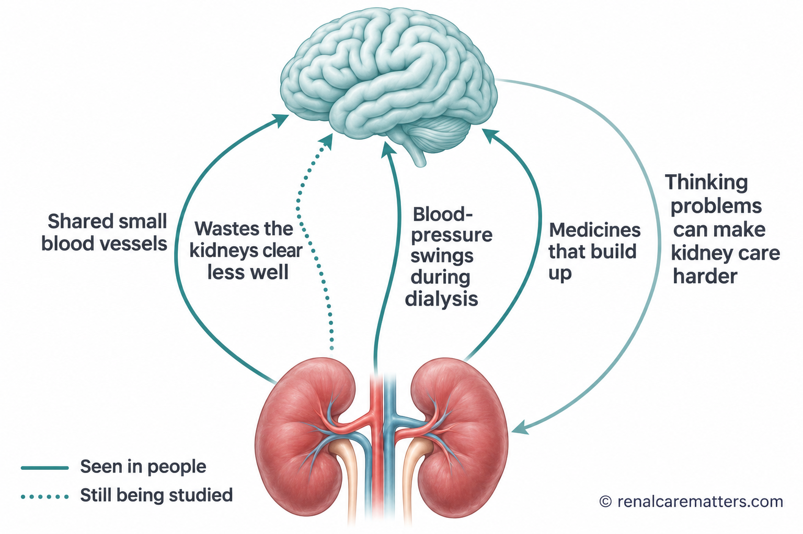
The kidney and the brain are linked through shared small blood vessels, waste the kidneys clear less well, blood-pressure swings during dialysis, and medicines. The return arrow is just as important: thinking problems can make it harder to manage medicines and appointments.Magkaugnay ang bato at utak sa pamamagitan ng magkaparehong maliliit na ugat, dumi na hindi gaanong nalilinis ng bato, pag-uga ng presyon habang nagda-dialysis, at mga gamot. Kasinghalaga ang pabalik na arrow: ang problema sa pag-iisip ay maaaring magpahirap sa pag-aalaga ng gamot at appointment.Ang kidney ug utok nagkadugtong pinaagi sa parehas nga gagmay nga ugat, hugaw nga dili kaayo malimpyohan sa kidney, pag-uyog sa presyon panahon sa dialysis, ug mga tambal. Parehas ka importante ang pabalik nga arrow: ang problema sa panghunahuna makapalisod sa pag-atiman sa tambal ug appointment.Magkaugnay ing batu at utak king parehung malating ugat, dinat a e masyadung malinis ning batu, pamag-uyug ning presyon kabang magda-dialysis, at gamot. Kasinghalaga ing pabalik a arrow: ing problema king pamanisip malyari nang pasakitan ing pamag-asikasu king gamot at appointment.
- BP
- Blood pressure
What thinking changes can look likeAno ang hitsura ng pagbabago sa pag-iisipUnsay hitsura sa kausaban sa panghunahunaNanu ing anyu ning pamagbayu king pamanisip
Doctors use the word cognition for all the ways the brain takes in, holds, and uses information. In kidney disease, the parts most often affected are attention (staying with a task), executive function (planning, organizing, switching between tasks), and processing speed (how quickly you take things in). Memory can be affected too. These are the skills people use to manage several medicines, a fluid allowance, and a dialysis schedule, so even mild changes can matter in daily life.Ginagamit ng mga doktor ang salitang cognition para sa lahat ng paraan ng utak sa pagtanggap, paghawak, at paggamit ng impormasyon. Sa sakit sa bato, kadalasang naaapektuhan ang atensyon (pananatili sa isang gawain), executive function (pagpaplano, pag-oorganisa, paglipat-lipat ng gawain), at bilis ng pagproseso (gaano kabilis mong naiintindihan ang mga bagay). Maaari ring maapektuhan ang memorya. Ito ang mga kakayahang ginagamit sa pag-aalaga ng ilang gamot, limitasyon sa tubig, at iskedyul ng dialysis, kaya kahit maliit na pagbabago ay mahalaga sa araw-araw.Gigamit sa mga doktor ang pulong cognition para sa tanang paagi sa utok sa pagdawat, paghupot, ug paggamit sa impormasyon. Sa sakit sa kidney, kasagarang maapektuhan ang atensyon (pagpabilin sa usa ka buluhaton), executive function (pagplano, pag-organisar, pagbalhin-balhin sa buluhaton), ug kapaspas sa pagproseso (unsa ka paspas nimo masabtan ang mga butang). Mahimo usab maapektuhan ang memorya. Kini ang mga abilidad nga gigamit sa pag-atiman sa pipila ka tambal, limitasyon sa tubig, ug iskedyul sa dialysis, busa bisan gamay nga kausaban importante sa adlaw-adlaw.Gamitan da ring doktor ing amanung cognition para king sablang paralan ning utak king pamanggap, pamaggawak, at pamamigamit impormasyun. King sakit king batu, maralas apektuan ing atensyon (pamanatili king metung a obra), executive function (pamagplanu, pamag-organisa, pamaglipat-lipat obra), at bilis ning pamagproseso (nung nanu kabilis mung maintindian deng bage). Malyari ring apektuan ing memorya. Ini la reng kakayanan a gamitan king pamag-asikasu pilan a gamot, limitasyun king danum, at iskedyul ning dialysis, kaya agyang malati a pamagbayu mayalaga king aldo-aldo.
- Losing track of which medicines you already took, or mixing up dosesNakakalimutan kung aling gamot na ang nainom, o napaghahalo ang dosisMakalimot kung unsang tambal na ang nainom, o masagol ang dosisMalilingwan nung nanu nang gamot ing ininum mu, o mapaghalu ing dosis
- Missing appointments or dialysis sessions you did not mean to missNakakaligtaan ang appointment o dialysis session nang hindi sinasadyaMakalimtan ang appointment o dialysis session nga wala tuyoaMalaktawan ing appointment o dialysis session a e mu sinadya
- Finding bills, forms, or a new diet plan harder to follow than beforeMas nahihirapang sundan ang bayarin, form, o bagong diet kaysa datiMas lisod na sundon ang bayranan, form, o bag-ong diet kaysa kaniadtoMas masakit nang tukyan ing bayarin, form, o bayung diet kesa dati
- Needing more time to follow a conversation, or losing your train of thoughtMas matagal bago masundan ang usapan, o nawawala sa iniisipMas dugay masundan ang istorya, o mawala sa gihunahunaMas matagal bayu masundan ing pamisabi, o mawawala king isipan
- Feeling foggy or slow at certain times, for example after dialysisPakiramdam na malabo o mabagal ang isip sa ilang oras, halimbawa pagkatapos ng dialysisPagbati nga hanap o hinay ang hunahuna sa pipila ka oras, pananglitan human sa dialysisPamakiramdam a malabu o mabagal ing isip king aliwang oras, alimbawa kaibat ning dialysis
- Family noticing a change before you do, which is very common and worth listening toNapapansin ito ng pamilya bago mo pa mapansin, na karaniwan at dapat pakingganMamatikdan kini sa pamilya una pa nimo, nga kasagaran ug angay paminawonMapansin ne ning pamilya bayu mu pa mapansin, a karaniwan at dapat pakiramdaman
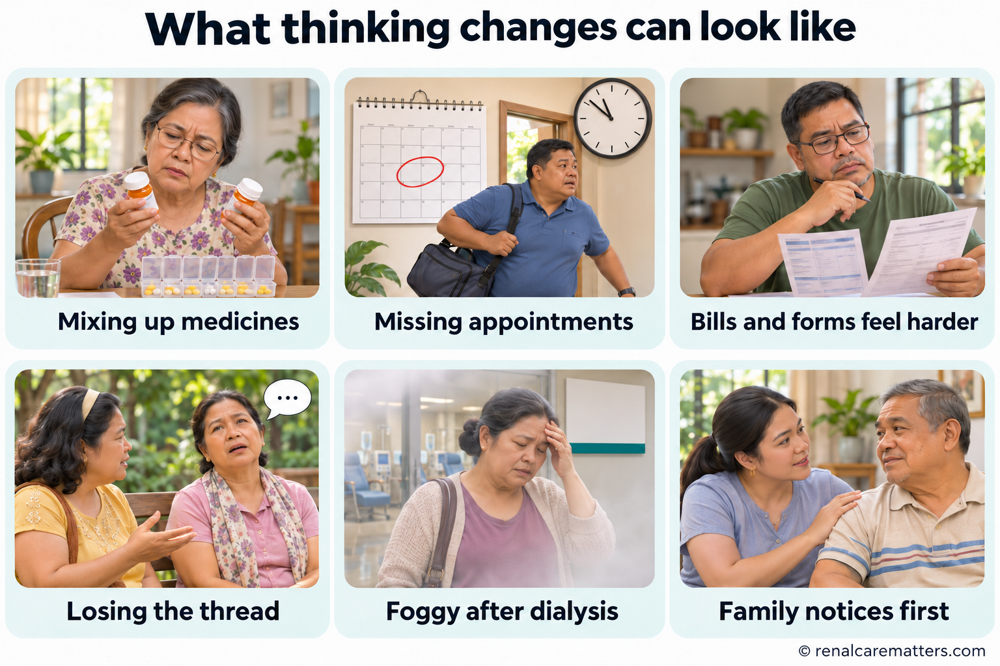
Thinking changes in kidney disease usually show up in everyday tasks first: medicines, appointments, paperwork, conversations, and how you feel after dialysis. Family members often notice before you do.Kadalasang lumilitaw muna sa araw-araw na gawain ang pagbabago sa pag-iisip sa sakit sa bato: gamot, appointment, papeles, usapan, at pakiramdam pagkatapos ng dialysis. Madalas napapansin ito ng pamilya bago mo pa mapansin.Ang kausaban sa panghunahuna sa sakit sa kidney kasagaran makita una sa adlaw-adlaw nga buluhaton: tambal, appointment, papeles, istorya, ug pagbati human sa dialysis. Kasagaran mamatikdan kini sa pamilya una pa nimo.Ing pamagbayu king pamanisip king sakit king batu maralas lulutu muna kareng obra aldo-aldo: gamot, appointment, papeles, kuwentuan, at pamakiramdam kaibat ning dialysis. Maralas apansinan ne ning pamilya bayu mu pa mapansin.
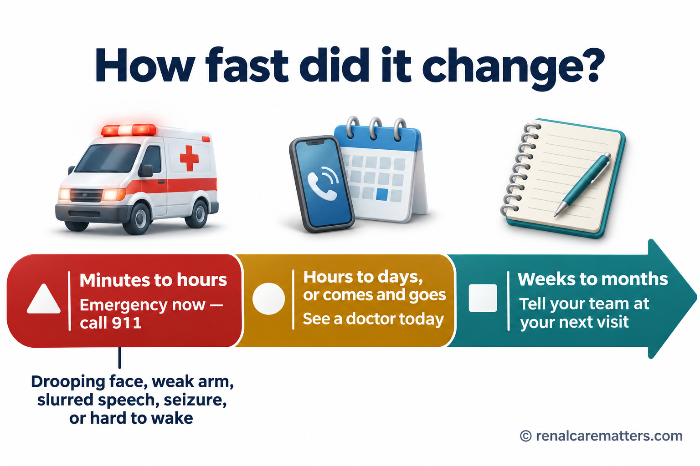
How fast a change happened tells you how fast to act. Sudden change is an emergency; change over days needs a same-day check; slow change over months should be raised at your next visit.Kung gaano kabilis nangyari ang pagbabago, ganoon din kabilis dapat kumilos. Emergency ang biglaang pagbabago; kailangan ng pagsusuri sa parehong araw ang pagbabago sa loob ng ilang araw; sabihin sa susunod na konsulta ang dahan-dahang pagbabago sa loob ng ilang buwan.Kung unsa ka paspas nahitabo ang kausaban, mao usab ka paspas ang paglihok. Emergency ang kalit nga kausaban; kinahanglan og pagsusi sa samang adlaw ang kausaban sulod sa pipila ka adlaw; isulti sa sunod nga konsulta ang hinay-hinay nga kausaban sulod sa pipila ka bulan.Nung nanu kabilis mayari ing pamagbayu, antimo ya mu rin kabilis ing pamagkilus. Emergency ing biglang pamagbayu; kailangan pamanyalidiri king pareung aldo ing pamagbayu king pilan a aldo; sabian me king susunod a konsulta ing dahan-dahang pamagbayu king pilan a bulan.
| How fast it changedGaano kabilis nagbagoUnsa ka paspas nausabNung nanu kabilis mibayu | What it may meanAno ang maaaring ibig sabihinUnsay mahimong ipasabotNanu ing malyaring buri nang sabian | What to doAno ang gagawinUnsay buhatonNanu ing gawan |
|---|---|---|
| Minutes to hours, or with a drooping face, weak arm, slurred speech, seizure, or hard to wakeIlang minuto hanggang oras, o may nakalaylay na mukha, mahinang braso, bulol na pananalita, kombulsyon, o mahirap gisinginPipila ka minuto hangtod oras, o adunay nahuyhoy nga nawong, huyang nga bukton, bulol nga pagsulti, kombulsyon, o lisod pukawonPilan a minutu angga king oras, o atin melaylay a lupa, malambut a gamat, bulol a pamanyalita, kombulsyon, o masakit pukawan | Stroke, a seizure, very low blood sugar, severe infection, or another emergencyStroke, kombulsyon, napakababang asukal, malubhang impeksyon, o iba pang emergencyStroke, kombulsyon, ubos kaayo nga asukal, grabe nga impeksyon, o laing emergencyStroke, kombulsyon, mabababa a asukal, malalang impeksyon, o aliwang emergency | Emergency now. Call 911 or go to the nearest emergency roomEmergency ngayon. Tumawag sa 911 o pumunta sa pinakamalapit na emergency roomEmergency karon. Tawag sa 911 o adto sa pinakaduol nga emergency roomEmergency ngeni. Tumawag king 911 o munta king pekamalapit a emergency room |
| Hours to days, or confusion that comes and goesIlang oras hanggang araw, o kalituhan na dumarating at nawawalaPipila ka oras hangtod adlaw, o kalibog nga moabot ug mawalaPilan a oras angga king aldo, o kalituan a dadatang at mawawala | Delirium from infection, a new medicine, dehydration, salt or sugar problems, or kidney failure getting worseDelirium dahil sa impeksyon, bagong gamot, dehydration, problema sa asin o asukal, o paglala ng kidney failureDelirium tungod sa impeksyon, bag-ong tambal, dehydration, problema sa asin o asukal, o paggrabe sa kidney failureDelirium uli ning impeksyon, bayung gamot, dehydration, problema king asin o asukal, o pamaglala ning kidney failure | Same-day medical review. Call your doctor or go to the hospitalPagsusuri sa parehong araw. Tawagan ang doktor o pumunta sa ospitalPagsusi sa samang adlaw. Tawag sa doktor o adto sa ospitalPamanyalidiri king pareung aldo. Tawagan me ing doktor o munta king ospital |
| Weeks to months, slowlyIlang linggo hanggang buwan, dahan-dahanPipila ka semana hangtod bulan, hinay-hinayPilan a dominggu angga king bulan, dahan-dahan | CKD-related changes, medicines, sleep, mood, hearing, anemia, or another brain conditionPagbabagong kaugnay ng CKD, gamot, tulog, lungkot, pandinig, anemia, o ibang kondisyon sa utakKausaban nga may kalabotan sa CKD, tambal, katulog, kaguol, pandungog, anemia, o laing kondisyon sa utokPamagbayu a kaugnay ning CKD, gamot, tulug, lungkut, pamakiramdam, anemia, o aliwang kondisyun king utak | Raise it at your next visit, or sooner if daily tasks are slippingSabihin sa susunod na konsulta, o mas maaga kung napapabayaan na ang araw-araw na gawainIsulti sa sunod nga konsulta, o mas sayo kung napasagdan na ang adlaw-adlaw nga buluhatonSabian me king susunod a konsulta, o mas agad nung mapapabayan no reng obra aldo-aldo |
You are not aloneHindi ka nag-iisaDili ka nag-inusaraAli ka bukud
When researchers combined 50 studies of about 25,000 people with CKD, roughly 4 in every 10 had some thinking problem on testing. The share was about 1 in 3 before dialysis, about 1 in 2 on hemodialysis (HD), almost 2 in 5 on peritoneal dialysis (PD), and about 1 in 4 after a kidney transplant. These numbers come from different tests used in different countries, so treat them as a rough picture. They describe groups of people, not your personal chance, and they do not mean that one kind of dialysis causes the difference: people who start each treatment are often different in age and health to begin with.Nang pagsamahin ng mga mananaliksik ang 50 pag-aaral sa humigit-kumulang 25,000 taong may CKD, mga 4 sa bawat 10 ang may problema sa pag-iisip sa pagsusuri. Mga 1 sa 3 bago mag-dialysis, mga 1 sa 2 sa hemodialysis (HD), halos 2 sa 5 sa peritoneal dialysis (PD), at mga 1 sa 4 pagkatapos ng kidney transplant. Galing ang mga numerong ito sa iba-ibang test sa iba-ibang bansa, kaya ituring itong magaspang na larawan. Inilalarawan nito ang grupo ng tao, hindi ang iyong personal na tsansa, at hindi ito nangangahulugang ang isang uri ng dialysis ang sanhi ng pagkakaiba: kadalasan ay magkaiba na sa edad at kalusugan ang mga nagsisimula sa bawat gamutan.Sa dihang gihiusa sa mga tigdukiduki ang 50 ka pagtuon sa mga 25,000 ka tawo nga adunay CKD, mga 4 sa matag 10 ang adunay problema sa panghunahuna sa pagsulay. Mga 1 sa 3 sa wala pa mag-dialysis, mga 1 sa 2 sa hemodialysis (HD), hapit 2 sa 5 sa peritoneal dialysis (PD), ug mga 1 sa 4 human sa kidney transplant. Gikan kini nga mga numero sa lain-laing pagsulay sa lain-laing nasud, busa isipa kini nga baga nga hulagway. Naghulagway kini sa grupo sa mga tawo, dili sa imong personal nga tsansa, ug wala kini nagpasabot nga usa ka matang sa dialysis ang hinungdan sa kalainan: kasagaran lahi na sa edad ug panglawas ang mosugod sa matag pagtambal.Kanita pamagsamanan da ring mananaliksik ing 50 a pamag-aral king lagyu 25,000 a tau a atin CKD, malapit 4 king balang 10 ing atin problema king pamanisip king pamanyalidiri. Malapit 1 king 3 bayu mag-dialysis, malapit 1 king 2 king hemodialysis (HD), malapit 2 king 5 king peritoneal dialysis (PD), at malapit 1 king 4 kaibat ning kidney transplant. Galing la reng numeru a reni king aliwa-aliwang test king aliwa-aliwang bansa, kaya ituring mu yang magaspang a larawan. Ilarawan na ning grupu da reng tau, e ing personal mung tsansa, at e na buring sabian a metung a klasi ning dialysis ing sanhi ning pamagkaiba: maralas aliwa na king edad at kalusugan deng mamagumpisa king balang panulu.
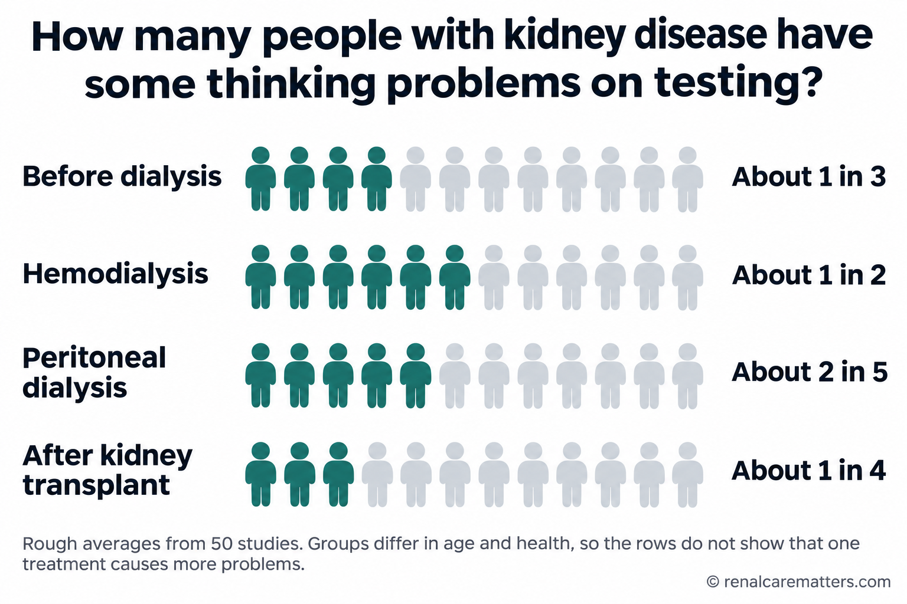
Across 50 studies, thinking problems on testing were common at every stage of kidney disease. These are rough group averages; they do not predict what will happen to you, and they do not show that one kind of dialysis causes more problems.Sa 50 pag-aaral, karaniwan ang problema sa pag-iisip sa pagsusuri sa bawat yugto ng sakit sa bato. Magaspang na karaniwan ito ng grupo; hindi nito hinuhulaan ang mangyayari sa iyo, at hindi nito ipinapakitang ang isang uri ng dialysis ang nagdudulot ng mas maraming problema.Sa 50 ka pagtuon, kasagaran ang problema sa panghunahuna sa pagsulay sa matag yugto sa sakit sa kidney. Baga nga kasagaran kini sa grupo; dili kini motagna kung unsay mahitabo kanimo, ug dili kini nagpakita nga usa ka matang sa dialysis ang hinungdan sa mas daghang problema.King 50 a pamag-aral, karaniwan ing problema king pamanisip king pamanyalidiri king balang yugtu ning sakit king batu. Magaspang a karaniwan ning grupu ini; e na uulan ing malyaring mayari keka, at e na ipakit a metung a klasi ning dialysis ing sanhi ning mas dakal a problema.
Large long-term studies also found that people with lower kidney function or more protein in the urine were more likely to be diagnosed with dementia years later. This is a link seen in populations, not proof that kidney disease alone causes dementia, and it cannot tell you what will happen to you. It is one more reason to protect both your kidneys and your blood vessels.Natuklasan din ng malalaking pangmatagalang pag-aaral na ang mga taong mas mababa ang gana ng bato o mas maraming protina sa ihi ay mas malamang na ma-diagnose ng dementia makalipas ang ilang taon. Ugnayang nakita ito sa populasyon, hindi patunay na ang sakit sa bato lamang ang nagdudulot ng dementia, at hindi nito masasabi kung ano ang mangyayari sa iyo. Isa pa itong dahilan para protektahan ang iyong bato at mga ugat.Nakaplagan usab sa dagkong dugay nga pagtuon nga ang mga tawo nga mas ubos ang gana sa kidney o mas daghang protina sa ihi mas lagmit nga ma-diagnose og dementia human sa pipila ka tuig. Kalabotan kini nga nakita sa populasyon, dili pamatuod nga ang sakit sa kidney ra ang hinungdan sa dementia, ug dili kini makasulti kung unsay mahitabo kanimo. Usa pa kini ka rason aron panalipdan ang imong kidney ug mga ugat.Atin la rin akit deng maragul a matagal a pamag-aral a deng tau a mas mababa ing gana ning batu o mas dakal a protina king ini mas malyari dang ma-diagnose dementia kaibat ning pilan a banwa. Ugnayan ya ini a akit king populasyun, e patunay a ing sakit king batu mu ing sanhi ning dementia, at e na asabi nung nanu ing malyari keka. Metung ya pang dahilan ini bang protektan me ing batu at ugat mu.
Four overlapping causesApat na magkakapatong na sanhiUpat ka nagsapaw nga hinungdanApat a mamagkapatung a sanhi
Scientists describe several pathways. In any one person, more than one is usually at work, and some are better proven than others.Inilalarawan ng mga siyentipiko ang ilang daanan. Sa isang tao, kadalasang higit sa isa ang gumagana, at may mas napatunayan kaysa sa iba.Gihulagway sa mga siyentista ang pipila ka agianan. Sa usa ka tawo, kasagaran labaw sa usa ang naglihok, ug ang uban mas napamatud-an kaysa sa uban.Ilarawan da ring siyentipiko ing pilan a dalanan. King metung a tau, maralas maigit king metung ing gagana, at atin mas mepatunayan kesa kareng aliwa.
| CauseSanhiHinungdanSanhi | What happensAno ang nangyayariUnsay mahitaboNanu ing mayayari | How sure we areGaano tayo kasiguradoUnsa kita kasiguradoNung nanu tayu kasiguradu |
|---|---|---|
| Shared blood-vessel damageMagkaparehong pinsala sa ugatParehas nga kadaot sa ugatParehung pinsala king ugat | High blood pressure and diabetes injure the small vessels of both organs. Small areas of brain injury can slow thinking and planning.Sinisira ng altapresyon at diabetes ang maliliit na ugat ng dalawang organ. Ang maliliit na pinsala sa utak ay maaaring magpabagal ng pag-iisip at pagpaplano.Ang taas nga presyon ug diabetes makadaot sa gagmay nga ugat sa duha ka organ. Ang gagmay nga kadaot sa utok makapahinay sa panghunahuna ug pagplano.Sisirain ning altapresyon at diabetes ing malating ugat ning adwang organ. Ing malating pinsala king utak malyari nang pabagalan ing pamanisip at pamagplanu. | Strong evidence from large human studiesMalakas na ebidensya mula sa malalaking pag-aaral sa taoLig-on nga ebidensya gikan sa dagkong pagtuon sa tawoMakapangyarian a ebidensya manibat king maragul a pamag-aral king tau |
| Waste the kidneys clear less wellDumi na hindi gaanong nalilinis ng batoHugaw nga dili kaayo malimpyohan sa kidneyDinat a e masyadung malinis ning batu | Some wastes, partly made by gut bacteria, build up and stick to blood proteins, so standard dialysis removes them poorly. In the laboratory they irritate blood vessels and brain cells.Naiipon ang ilang dumi, na bahagyang gawa ng bacteria sa bituka, at kumakapit sa protina sa dugo, kaya hindi ito gaanong natatanggal ng karaniwang dialysis. Sa laboratoryo, iniirita nila ang ugat at selula ng utak.Ang pipila ka hugaw, nga bahin gihimo sa bacteria sa tinai, motapok ug mopilit sa protina sa dugo, busa dili kaayo kini makuha sa kasagarang dialysis. Sa laboratoryo, makairita kini sa ugat ug selula sa utok.Mipun la ring aliwang dinat, a bage gewa da ring bacteria king bituka, at kapit la king protina king daya, kaya e la masyadung makwa ning karaniwang dialysis. King laboratoryu, iirita da ring ugat at selula ning utak. | Seen in laboratory work and linked in people; not yet proven to cause thinking problems in peopleNakita sa laboratoryo at may kaugnayan sa tao; hindi pa napapatunayang sanhi ng problema sa pag-iisip sa taoNakita sa laboratoryo ug may kalabotan sa tawo; wala pa napamatud-an nga hinungdan sa problema sa panghunahuna sa tawoAkit king laboratoryu at atin kaugnayan king tau; e pa mepatunayan a sanhi ning problema king pamanisip king tau |
| Blood-pressure swings during dialysisPag-uga ng presyon habang nagda-dialysisPag-uyog sa presyon panahon sa dialysisPamag-uyug ning presyon kabang magda-dialysis | Removing fluid quickly can lower blood flow to the brain for a while. In one study, brain oxygen dipped in about 1 of every 4 sessions, often when the blood pressure reading looked acceptable.Ang mabilis na pag-alis ng tubig ay maaaring pansamantalang magpababa ng daloy ng dugo sa utak. Sa isang pag-aaral, bumaba ang oxygen sa utak sa mga 1 sa bawat 4 na session, madalas kahit maayos ang nabasang presyon.Ang paspas nga pagkuha sa tubig makapaubos sa agos sa dugo ngadto sa utok sa makadiyot. Sa usa ka pagtuon, mius-os ang oxygen sa utok sa mga 1 sa matag 4 ka session, kasagaran bisan maayo ang nabasa nga presyon.Ing mabilis a pamaglako danum malyari nang pababan pansamantala ing dalan ning daya king utak. King metung a pamag-aral, mibaba ing oxygen king utak king malapit 1 king balang 4 a session, maralas agyang mayap ing abasang presyon. | Measured directly during dialysis; long-term effect on thinking still being studiedDirektang nasukat habang nagda-dialysis; pinag-aaralan pa ang pangmatagalang epekto sa pag-iisipDirektang nasukod panahon sa dialysis; gitun-an pa ang dugay nga epekto sa panghunahunaDirektang asukat kabang magda-dialysis; pag-aralan pa ing matagal a epektu king pamanisip |
| Body-wide strain and medicinesPasanin ng buong katawan at mga gamotKabug-at sa tibuok lawas ug mga tambalPasan ning sablang katawan at gamot | Anemia, inflammation, poor sleep, low mood, salt or sugar imbalance, and medicines that stay in the body longer when the kidneys are weak.Anemia, pamamaga, kulang na tulog, lungkot, hindi balanseng asin o asukal, at mga gamot na mas tumatagal sa katawan kapag mahina ang bato.Anemia, panghubag, kulang nga katulog, kaguol, dili balanse nga asin o asukal, ug mga tambal nga mas dugay magpabilin sa lawas kung huyang ang kidney.Anemia, pamamaga, kulang a tulug, lungkut, e balanseng asin o asukal, at gamot a mas matagal manatili king katawan nung malambut ing batu. | Varies by person; several are treatable once foundNag-iiba sa bawat tao; ilan ang nagagamot kapag natagpuanLahi-lahi sa matag tawo; pipila ang matambalan kung makit-anAliwa-aliwa king balang tau; pilan ing malyaring panuluan nung akit |
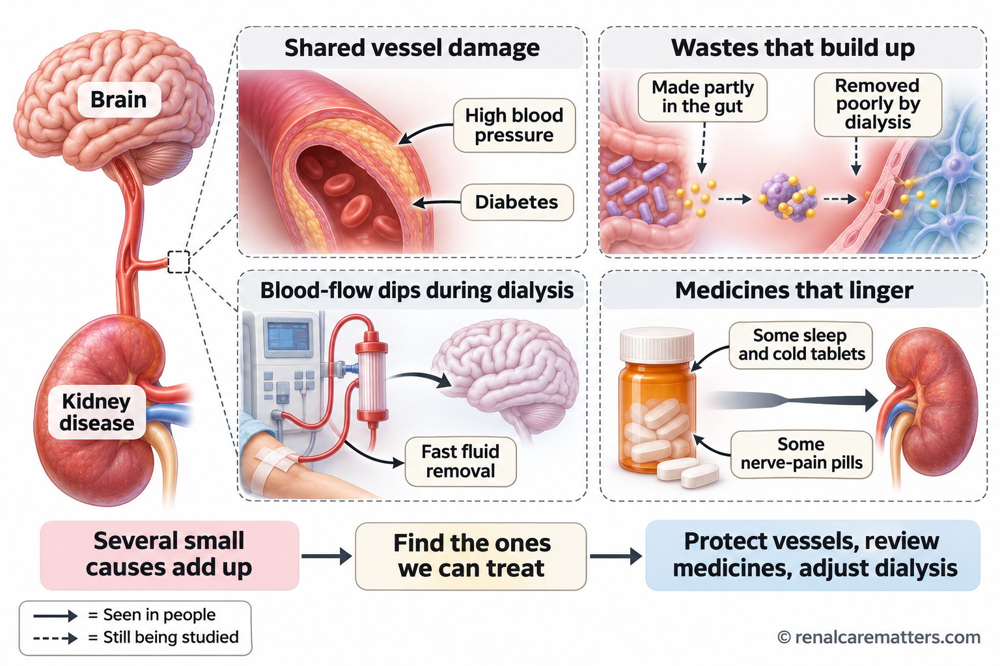
Four overlapping pathways link kidney disease and thinking problems. Solid arrows show links seen in people; dashed arrows show mechanisms still being tested.Apat na magkakapatong na daanan ang nag-uugnay sa sakit sa bato at problema sa pag-iisip. Ang buong arrow ay ugnayang nakita sa tao; ang putol-putol na arrow ay mekanismong sinusubok pa.Upat ka nagsapaw nga agianan ang nagdugtong sa sakit sa kidney ug problema sa panghunahuna. Ang tibuok nga arrow mao ang kalabotan nga nakita sa tawo; ang putol-putol nga arrow mao ang mekanismo nga gisulayan pa.Apat a mamagkapatung a dalanan ing mamag-ugnay king sakit king batu at problema king pamanisip. Ing buung arrow ugnayan a akit king tau; ing putul-putul a arrow mekanismu a subukan pa.
- BBB
- Blood–brain barrier
- IS
- Indoxyl sulfate
- PCS
- p-Cresyl sulfate
- HD
- Hemodialysis
Notice the timing, and tell the teamPansinin ang oras, at sabihin sa teamMatikdi ang oras, ug isulti sa teamPansinan me ing oras, at sabian mu king team
Many people on hemodialysis feel foggy or very tired for some hours after a session. That is worth reporting, because the team can look at how much fluid is being removed, how fast, and how your blood pressure behaves during treatment. Write down when the fogginess happens: before, during, or after dialysis, and how long it lasts. The pattern helps the team decide what to change.Maraming nagda-hemodialysis ang nakakaramdam ng malabong isip o sobrang pagod ilang oras pagkatapos ng session. Mahalagang i-report ito, dahil masusuri ng team kung gaano karaming tubig ang tinatanggal, gaano kabilis, at paano kumikilos ang iyong presyon habang ginagamot. Isulat kailan nangyayari ang pagkalabo: bago, habang, o pagkatapos ng dialysis, at gaano katagal. Tutulungan ng pattern ang team na magpasya kung ano ang babaguhin.Daghang nagda-hemodialysis ang mobati og hanap nga hunahuna o sobra nga kakapoy sulod sa pipila ka oras human sa session. Angay kini i-report, kay masusi sa team kung pila ka tubig ang gikuha, unsa ka paspas, ug unsaon paglihok sa imong presyon panahon sa pagtambal. Isulat kanus-a mahitabo ang pagkahanap: sa wala pa, samtang, o human sa dialysis, ug unsa kadugay. Ang pattern motabang sa team sa pagdesisyon kung unsay usbon.Dakal a magda-hemodialysis ing makaramdam malabung isip o sobrang kapagal pilan a oras kaibat ning session. Mayalaga ing i-report ya ini, uling asuri ning team nung pilan a danum ing makwa, nung nanu kabilis, at nung kapilan kikilos ing presyon mu kabang panulu. Isulat me nanu oras mayayari ing pamagkalabu: bayu, kabang, o kaibat ning dialysis, at nung nanu katagal. Tulungan ning pattern ing team bang magpasiya nung nanu ing bayuan.
- Keep your interdialytic weight gain modest by limiting salt and fluid as advised. Smaller gains mean less fluid to remove in a hurry.Panatilihing katamtaman ang pagtaas ng timbang sa pagitan ng dialysis sa paglimita ng asin at tubig ayon sa payo. Kapag maliit ang dagdag, mas kaunting tubig ang kailangang alisin nang madalian.Ipabilin nga kasarangan ang pagsaka sa timbang tali sa dialysis pinaagi sa paglimita sa asin ug tubig sumala sa tambag. Kung gamay ang dugang, mas gamay nga tubig ang kinahanglan kuhaon sa kadali.Panatilian me katamtaman ing pamagtaas timbang king pagitan ning dialysis king pamaglimita asin at danum ayun king payu. Nung malati ing dagdag, mas kaunting danum ing kailangan alisan kadalian.
- Do not shorten or skip sessions. A shorter session removes the same fluid faster, which is harder on the circulation.Huwag paikliin o laktawan ang session. Ang mas maikling session ay nag-aalis ng parehong dami ng tubig nang mas mabilis, na mas mabigat sa sirkulasyon.Ayaw pamub-a o laktawi ang session. Ang mas mubo nga session mokuha sa parehas nga tubig nga mas paspas, nga mas bug-at sa sirkulasyon.E me paikliyan o laktawan ing session. Ing mas maikli a session alisan ne ing pareung danum a mas mabilis, a mas mabigat king sirkulasyun.
- Speak up during treatment if you feel dizzy, sick, yawning, cramping, or "not right". These can be early signs that your blood pressure is falling.Magsalita habang ginagamot kung nahihilo, nasusuka, naghihikab, pinupulikat, o "hindi maayos" ang pakiramdam. Maaaring maagang senyales ito na bumababa ang presyon.Pagsulti panahon sa pagtambal kung malipong, masuka, maghikap, ma-cramp, o "dili maayo" ang pagbati. Mahimong sayo kini nga timaan nga mius-os ang presyon.Magsalita kabang panulu nung malipung, masuka, mangayap, pulikatan, o "e mayap" ing pamakiramdam. Malyaring maagang senyales ini a mababa ing presyon.
- Ask about your treatment plan: target weight, session length, and whether a longer or extra session would help. Do not change your own medicines or schedule.Magtanong tungkol sa plano ng gamutan: target na timbang, haba ng session, at kung makakatulong ang mas mahaba o dagdag na session. Huwag baguhin nang mag-isa ang gamot o iskedyul.Pangutana bahin sa plano sa pagtambal: target nga timbang, gitas-on sa session, ug kung makatabang ba ang mas taas o dugang nga session. Ayaw usba nga ikaw ra ang tambal o iskedyul.Magkutang tungkul king planu ning panulu: target a timbang, kabaluan ning session, at nung makatulung ing mas mabaluang o dagdag a session. E me bayuan bukud ing gamot o iskedyul mu.
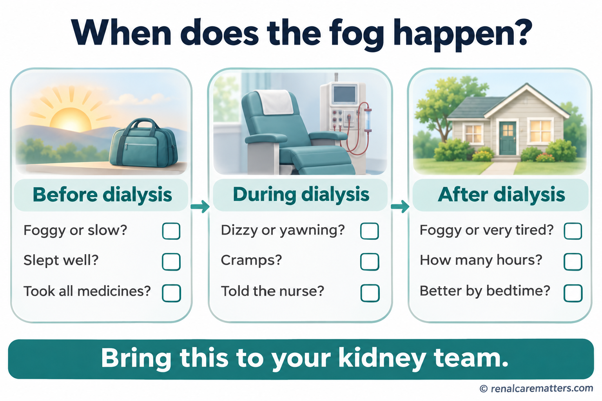
Noting when fogginess happens — before, during, or after dialysis — helps your team decide whether fluid removal, session length, sleep, or medicines are part of the cause.Ang pagtatala kung kailan nangyayari ang pagkalabo ng isip — bago, habang, o pagkatapos ng dialysis — ay tumutulong sa team na malaman kung bahagi ng sanhi ang pag-alis ng tubig, haba ng session, tulog, o gamot.Ang pagsulat kung kanus-a mahitabo ang pagkahanap sa hunahuna — sa wala pa, samtang, o human sa dialysis — motabang sa team nga mahibal-an kung bahin sa hinungdan ang pagkuha sa tubig, gitas-on sa session, katulog, o tambal.Ing pamagsulat nung kapilan mayayari ing pamagkalabu ning isip — bayu, kabang, o kaibat ning dialysis — tutulung king team bang abalu nung bage ning sanhi ing pamaglako danum, kabaluan ning session, tulug, o gamot.
If it happens during dialysisKung mangyari habang nagda-dialysisKung mahitabo panahon sa dialysisNung mayari kabang magda-dialysis
Sudden confusion, slurred speech, facial droop, arm weakness, or a seizure during or after dialysis is an emergency. Alert the staff immediately. A normal blood pressure or fluid-removal number does not rule out a stroke.Ang biglaang kalituhan, bulol na pananalita, nakalaylay na mukha, mahinang braso, o kombulsyon habang o pagkatapos ng dialysis ay emergency. Abisuhan agad ang staff. Hindi inaalis ng normal na presyon o numero ng tubig na inalis ang posibilidad ng stroke.Ang kalit nga kalibog, bulol nga pagsulti, nahuyhoy nga nawong, huyang nga bukton, o kombulsyon samtang o human sa dialysis usa ka emergency. Pahibal-a dayon ang staff. Ang normal nga presyon o numero sa tubig nga gikuha dili makawagtang sa posibilidad sa stroke.Ing biglang kalituan, bulol a pamanyalita, melaylay a lupa, malambut a gamat, o kombulsyon kabang o kaibat ning dialysis emergency ya. Abisuan me agad ing staff. E na alisan ning normal a presyon o numeru ning danum a mekwa ing posibilidad ning stroke.
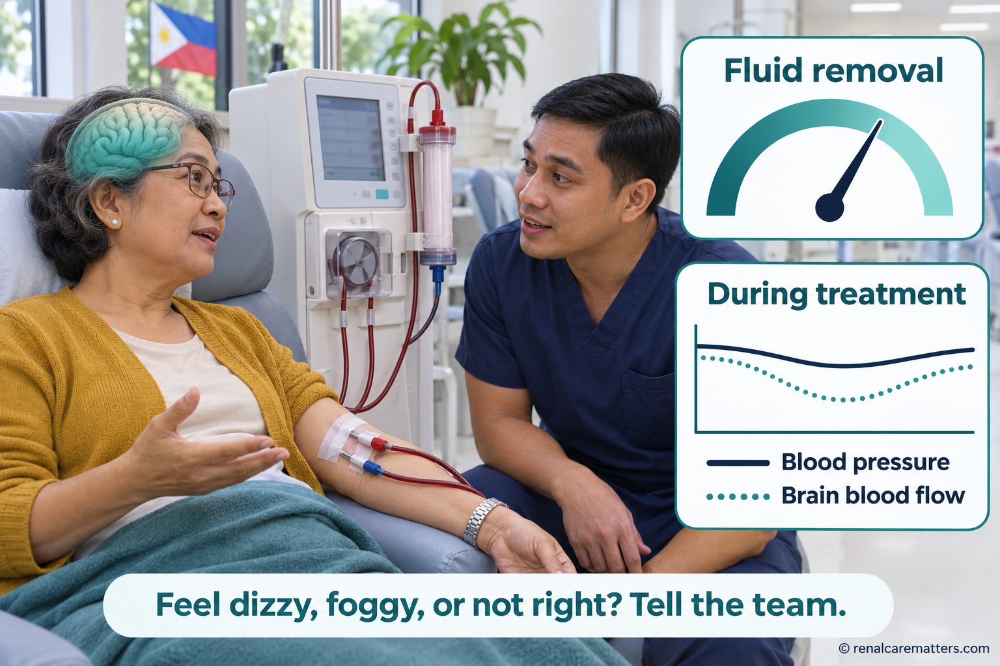
During hemodialysis, fluid is removed from the blood. If too much is removed too quickly, blood flow to the brain can dip for a while, sometimes without an obvious drop on the blood-pressure monitor.Sa hemodialysis, inaalis ang tubig mula sa dugo. Kapag sobra at masyadong mabilis ang pag-alis, maaaring pansamantalang bumaba ang daloy ng dugo sa utak, minsan nang walang halatang pagbaba sa monitor ng presyon.Sa hemodialysis, gikuha ang tubig gikan sa dugo. Kung sobra ug paspas kaayo ang pagkuha, mahimong mius-os sa makadiyot ang agos sa dugo sa utok, usahay bisan walay klaro nga pag-us-os sa monitor sa presyon.King hemodialysis, alisan ing danum manibat king daya. Nung sobra at mabilis ing pamaglako, malyaring mababa pansamantala ing dalan ning daya king utak, kapilan e malino ing pamagbaba king monitor ning presyon.
- HD
- Hemodialysis
- UF
- Ultrafiltration — fluid removal during dialysis
- BP
- Blood pressure
Looking for causes that can be fixedPaghahanap ng mga sanhing maaaring ayusinPagpangita sa mga hinungdan nga matul-idPamanintun kareng sanhing malyaring ayusan
A good assessment starts with a conversation. Your doctor will ask what changed, when it started, and how it affects daily life, and, with your permission, will ask someone who knows you well. A short pen-and-paper thinking test may be used. It is one piece of information: it cannot diagnose dementia by itself, and a low score on a bad day, during illness, or right after dialysis can be misleading.Nagsisimula ang mabuting pagsusuri sa pakikipag-usap. Itatanong ng doktor kung ano ang nagbago, kailan nagsimula, at paano ito nakakaapekto sa araw-araw, at, kung papayag ka, magtatanong sa taong lubos na nakakakilala sa iyo. Maaaring gumamit ng maikling test sa pag-iisip gamit ang papel at panulat. Isa lamang itong bahagi ng impormasyon: hindi nito kayang mag-diagnose ng dementia nang mag-isa, at nakakalito ang mababang marka sa masamang araw, habang may sakit, o pagkatapos agad ng dialysis.Ang maayong pagsusi magsugod sa pakigsulti. Pangutan-on sa doktor kung unsay nausab, kanus-a nagsugod, ug unsaon niini pag-apekto sa adlaw-adlaw, ug, kung motugot ka, mangutana sa tawo nga nakaila kanimo pag-ayo. Mahimong gamiton ang mubo nga pagsulay sa panghunahuna gamit ang papel ug ballpen. Usa ra kini ka bahin sa impormasyon: dili kini maka-diagnose og dementia nga kini ra, ug makalibog ang ubos nga marka sa daotang adlaw, samtang masakiton, o dayon human sa dialysis.Mamagumpisa ing mayap a pamanyalidiri king pamisabi. Kutnan na ning doktor nung nanu ing mibayu, kapilan migumpisa, at nung kapilan na apektuan ing aldo-aldo, at, nung pumayag ka, kutnan na ing taung kilala ka. Malyaring gamitan ing maikli a test king pamanisip gamit ing papel at pluma. Metung mu yang bage ning impormasyun: e na kaya ing mag-diagnose dementia bukud, at makalitu ing mababang marka king malating aldo, kabang masakit, o kaibat mismu ning dialysis.
The team will usually review:Karaniwang susuriin ng team ang:Kasagaran susihon sa team ang:Karaniwan suriyan ning team ing:
- Every medicine, including over-the-counter sleep aids, cold and allergy tablets, pain relievers, and herbal products (see the next section)Bawat gamot, kasama ang nabibiling pampatulog, gamot sa sipon at allergy, pain reliever, at herbal (tingnan ang susunod na seksyon)Matag tambal, lakip ang mapalit nga pampakatulog, tambal sa sip-on ug allergy, pain reliever, ug herbal (tan-awa ang sunod nga seksyon)Balang gamot, kayabe ing mabibiling pampatudtud, gamot king sipun at allergy, pain reliever, at herbal (lawan me ing susunod a seksyun)
- Blood tests: hemoglobin for anemia, sugar, sodium, calcium, kidney function, and sometimes thyroid and vitamin B12Blood test: hemoglobin para sa anemia, asukal, sodium, calcium, gana ng bato, at minsan thyroid at vitamin B12Blood test: hemoglobin para sa anemia, asukal, sodium, calcium, gana sa kidney, ug usahay thyroid ug vitamin B12Blood test: hemoglobin para king anemia, asukal, sodium, calcium, gana ning batu, at kapilan thyroid at vitamin B12
- Sleep: loud snoring or stopping breathing at night can point to sleep apnea, which is treatableTulog: ang malakas na hilik o paghinto ng paghinga sa gabi ay maaaring sleep apnea, na nagagamotKatulog: ang kusog nga hagok o paghunong sa pagginhawa sa gabii mahimong sleep apnea, nga matambalanTulug: ing makusug a ngurut o pamagtuknang mangisnawa king bengi malyaring sleep apnea, a malyaring panuluan
- Mood: depression is common in kidney disease and can look like poor memoryDamdamin: karaniwan ang depresyon sa sakit sa bato at maaaring magmukhang mahinang memoryaPagbati: kasagaran ang depresyon sa sakit sa kidney ug mahimong murag huyang nga memoryaDamdamin: karaniwan ing depresyun king sakit king batu at malyari yang lumawe malambut a memorya
- Hearing and eyesight: missing what is said looks like forgettingPandinig at paningin: ang hindi pagkarinig ng sinabi ay nagmumukhang pagkalimotPandungog ug panan-aw: ang dili pagkadungog sa gisulti murag pagkalimotPamakiramdam at pamanlawe: ing e pamakiramdam king sinabi lulumawe pamaglingwan
- Blood pressure, diabetes control, and dialysis recordsPresyon, kontrol ng diabetes, at rekord ng dialysisPresyon, kontrol sa diabetes, ug rekord sa dialysisPresyon, kontrol ning diabetes, at rekord ning dialysis
If the problem keeps progressing, looks unusual, or makes daily tasks unsafe, your doctor may arrange brain imaging or referral to a neurologist, geriatrician, or psychiatrist. That is good care, not a sign that hope is lost.Kung patuloy na lumalala ang problema, kakaiba ang hitsura, o ginagawang hindi ligtas ang araw-araw na gawain, maaaring ipa-scan ng doktor ang utak o i-refer sa neurologist, geriatrician, o psychiatrist. Mabuting pangangalaga ito, hindi senyales na wala nang pag-asa.Kung padayon nga mograbe ang problema, talagsaon ang hitsura, o himoon nga dili luwas ang adlaw-adlaw nga buluhaton, mahimong ipa-scan sa doktor ang utok o i-refer sa neurologist, geriatrician, o psychiatrist. Maayong pag-atiman kini, dili timaan nga wala nay paglaum.Nung patuloy yang lumala ing problema, kakaiba ing anyu, o gawan nang e ligtas ing obra aldo-aldo, malyari nang ipa-scan ning doktor ing utak o i-refer king neurologist, geriatrician, o psychiatrist. Mayap a pamag-asikasu ini, e senyales a ala nang pag-asa.
Medicines that can cloud thinking when kidneys are weakMga gamot na maaaring magpalabo ng isip kapag mahina ang batoMga tambal nga makapahanap sa hunahuna kung huyang ang kidneyGamot a malyari dang pakalabuan ing isip nung malambut ing batu
Weak kidneys remove some medicines more slowly, so a normal dose can build up. Older adults and people on dialysis are most at risk. In one large study of older adults with CKD, starting the muscle relaxant baclofen at a higher dose was linked to about three and a half times more hospital stays for confusion than a lower dose. The overall risk was still small, but the pattern shows why doses must be matched to kidney function.Mas mabagal na inaalis ng mahinang bato ang ilang gamot, kaya maaaring maipon ang normal na dosis. Pinakananganganib ang matatanda at nagda-dialysis. Sa isang malaking pag-aaral sa matatandang may CKD, ang pagsisimula ng muscle relaxant na baclofen sa mas mataas na dosis ay naiugnay sa mga tatlo at kalahating beses na mas maraming pagka-ospital dahil sa kalituhan kumpara sa mas mababang dosis. Maliit pa rin ang kabuuang panganib, pero ipinapakita nito kung bakit dapat itugma ang dosis sa gana ng bato.Ang huyang nga kidney mas hinay nga mokuha sa pipila ka tambal, busa ang normal nga dosis mahimong motapok. Labing delikado ang mga tigulang ug ang nagda-dialysis. Sa usa ka dakong pagtuon sa mga tigulang nga adunay CKD, ang pagsugod sa muscle relaxant nga baclofen sa mas taas nga dosis nalambigit sa mga tulo ug tunga ka pilo nga mas daghang pagka-ospital tungod sa kalibog kumpara sa mas ubos nga dosis. Gamay gihapon ang kinatibuk-ang peligro, apan gipakita niini kung nganong kinahanglan itugma ang dosis sa gana sa kidney.Mas mabagal alisan ning malambut a batu ing aliwang gamot, kaya malyaring mipun ing normal a dosis. Pekamapanganib la reng matatua at magda-dialysis. King metung a maragul a pamag-aral kareng matua a atin CKD, ing pamagumpisa ning muscle relaxant a baclofen king mas matas a dosis meugnay king malapit atlu at kalahating besis a mas dakal a pamag-ospital uli ning kalituan kesa king mas mababang dosis. Malati pa rin ing kabuuang panganib, oneng ipakit na nung nanu ya at dapat itugma ing dosis king gana ning batu.
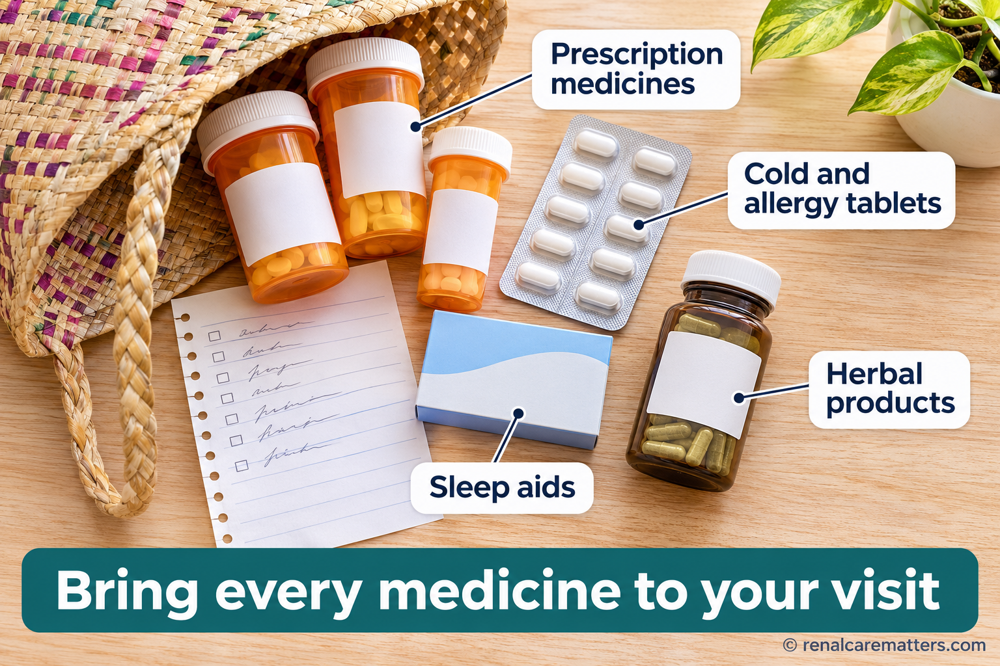
Bring every medicine to your visit, including cold and allergy tablets, sleep aids, and herbal products. Some of these stay in the body longer when the kidneys are weak and can cloud thinking.Dalhin ang bawat gamot sa konsulta, kasama ang gamot sa sipon at allergy, pampatulog, at herbal. Mas matagal na nananatili sa katawan ang ilan dito kapag mahina ang bato at maaaring magpalabo ng isip.Dad-a ang matag tambal sa konsulta, lakip ang tambal sa sip-on ug allergy, pampakatulog, ug herbal. Mas dugay magpabilin sa lawas ang pipila niini kung huyang ang kidney ug makapahanap sa hunahuna.Darang me ing balang gamot king konsulta, kayabe ing gamot king sipun at allergy, pampatudtud, at herbal. Mas matagal manatili king katawan ing aliwa kareni nung malambut ing batu at malyari dang pakalabuan ing isip.
| Medicine groupGrupo ng gamotGrupo sa tambalGrupu ning gamot | ExamplesHalimbawaPananglitanAlimbawa | Why it mattersBakit mahalagaNgano importanteNanu ya at mayalaga |
|---|---|---|
| Older antihistamines (in many sleep aids and cold or allergy tablets)Lumang antihistamine (nasa maraming pampatulog at gamot sa sipon o allergy)Karaan nga antihistamine (anaa sa daghang pampakatulog ug tambal sa sip-on o allergy)Matuang antihistamine (atyu king dakal a pampatudtud at gamot king sipun o allergy) | diphenhydramine, chlorphenamine (chlorpheniramine) | Anticholinergic effects can cause confusion, especially in older adultsAng anticholinergic na epekto ay maaaring magdulot ng kalituhan, lalo na sa matatandaAng anticholinergic nga epekto makahatag og kalibog, labi na sa mga tigulangIng anticholinergic a epektu malyari yang magdulot kalituan, lalu na kareng matua |
| Muscle relaxantsMuscle relaxantMuscle relaxantMuscle relaxant | baclofen | Cleared by the kidneys; linked to hospital stays for confusion in CKDInaalis ng bato; naiugnay sa pagka-ospital dahil sa kalituhan sa CKDGikuha sa kidney; nalambigit sa pagka-ospital tungod sa kalibog sa CKDAlisan ning batu; meugnay king pamag-ospital uli ning kalituan king CKD |
| Nerve-pain medicinesGamot sa sakit ng ugatTambal sa sakit sa ugatGamot king sakit ning ugat | gabapentin, pregabalin | Need lower doses in CKD; can cause drowsiness and unsteadinessKailangan ng mas mababang dosis sa CKD; maaaring magdulot ng antok at pagkahiloKinahanglan og mas ubos nga dosis sa CKD; makahatag og katulgon ug pagkalipongKailangan mas mababang dosis king CKD; malyari yang magdulot antuk at kalipung |
| Sleeping pills and tranquilizersPampatulog at pampakalmaPampakatulog ug pampakalmaPampatudtud at pampakalma | benzodiazepines such as diazepambenzodiazepine gaya ng diazepambenzodiazepine sama sa diazepambenzodiazepine antimo ing diazepam | Slow thinking and raise the risk of fallsNagpapabagal ng isip at nagpapataas ng panganib na matumbaMakapahinay sa hunahuna ug makapataas sa peligro nga matumbaPabagalan ing isip at pataasan ing panganib a mabagsak |
| Strong pain medicinesMatapang na gamot sa sakitKusog nga tambal sa sakitMatapang a gamot king sakit | opioids such as tramadolopioid gaya ng tramadolopioid sama sa tramadolopioid antimo ing tramadol | Some build up in kidney failure; need careful dosingMay naiipon sa kidney failure; kailangan ng maingat na dosisAdunay motapok sa kidney failure; kinahanglan og mabinantayon nga dosisAtin mipun king kidney failure; kailangan maingat a dosis |
Do not stop a medicine on your ownHuwag ihinto ang gamot nang mag-isaAyaw hunonga ang tambal nga ikaw raE me tuknangan ing gamot bukud
Some of these medicines are needed, and stopping suddenly can be harmful. Bring every bottle and packet, including herbal products, to your next visit, and ask your doctor or pharmacist whether each one is still needed and at the right dose for your kidneys. Many cold and allergy tablets sold in pharmacies contain chlorphenamine, so read the label.Kailangan ang ilan sa mga gamot na ito, at maaaring makasama ang biglang paghinto. Dalhin ang bawat bote at pakete, kasama ang herbal, sa susunod na konsulta, at itanong sa doktor o pharmacist kung kailangan pa ang bawat isa at kung tama ang dosis para sa iyong bato. Maraming gamot sa sipon at allergy sa botika ang may chlorphenamine, kaya basahin ang label.Kinahanglan ang pipila niini nga mga tambal, ug makadaot ang kalit nga paghunong. Dad-a ang matag botelya ug pakete, lakip ang herbal, sa sunod nga konsulta, ug pangutan-a ang doktor o pharmacist kung kinahanglan pa ang matag usa ug kung husto ang dosis para sa imong kidney. Daghang tambal sa sip-on ug allergy sa botika ang adunay chlorphenamine, busa basaha ang label.Kailangan ing aliwa kareng gamot a reni, at malyaring makasakit ing biglang pamagtuknang. Darang me ing balang bote at pakete, kayabe ing herbal, king susunod a konsulta, at kutnan me ing doktor o pharmacist nung kailangan pa ing balang metung at nung tama ing dosis para king batu mu. Dakal a gamot king sipun at allergy king botika ing atin chlorphenamine, kaya basan me ing label.
Things that protect your brain and your kidneys togetherMga bagay na sabay na nagpoprotekta sa iyong utak at batoMga butang nga dungan nga manalipod sa imong utok ug kidneyBage a kayabe dang protektan ing utak at batu mu
No medicine is yet proven to prevent or reverse thinking problems caused by kidney disease. But the steps that protect blood vessels and kidneys are reasonable for the brain too, and most are worth doing for their own sake:Wala pang gamot na napatunayang pumipigil o nagbabalik sa problema sa pag-iisip dahil sa sakit sa bato. Pero ang mga hakbang na nagpoprotekta sa ugat at bato ay makatwiran din para sa utak, at karamihan ay sulit gawin para sa sarili nilang benepisyo:Wala pay tambal nga napamatud-an nga mopugong o mobalik sa problema sa panghunahuna tungod sa sakit sa kidney. Apan ang mga lakang nga manalipod sa ugat ug kidney makatarunganon usab para sa utok, ug kadaghanan angay buhaton para sa ilang kaugalingong kaayohan:Ala pang gamot a mepatunayang pigilan o ibalik ing problema king pamanisip uli ning sakit king batu. Oneng deng hakbang a protektan ing ugat at batu makatuyu la rin para king utak, at kalupan mayap gawan para king sarili dang benepisyu:
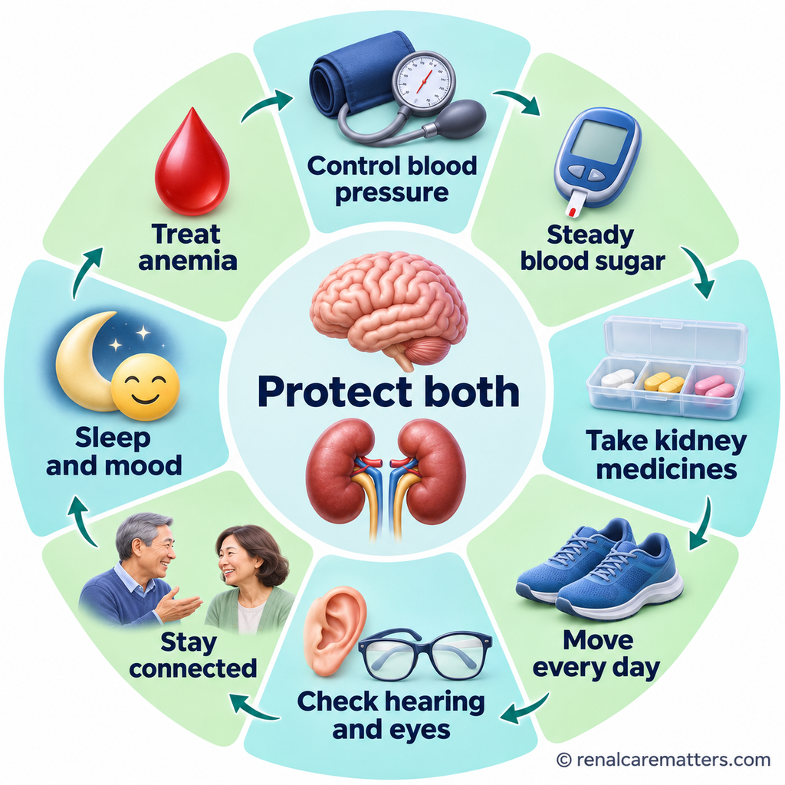
The steps that protect your blood vessels and kidneys are also sensible for your brain. None is proven to prevent memory problems on its own, but each is worth doing for your health.Ang mga hakbang na nagpoprotekta sa iyong ugat at bato ay makatwiran din para sa iyong utak. Wala pang napatunayang pumipigil sa problema sa memorya nang mag-isa, pero sulit gawin ang bawat isa para sa iyong kalusugan.Ang mga lakang nga manalipod sa imong ugat ug kidney makatarunganon usab para sa imong utok. Wala pay napamatud-an nga mopugong sa problema sa memorya nga kini ra, apan angay buhaton ang matag usa para sa imong panglawas.Deng hakbang a protektan ing ugat at batu mu makatuyu la rin para king utak mu. Ala pang mepatunayang pigilan ing problema king memorya bukud, oneng mayap gawan ing balang metung para king kalusugan mu.
- Blood pressure control. In a large trial, a lower blood-pressure target modestly reduced the combined chance of mild memory problems or dementia over about seven years. Your target depends on your health and whether you are on dialysis, so agree it with your doctor.Kontrol sa presyon. Sa isang malaking trial, bahagyang pinababa ng mas mababang target ng presyon ang pinagsamang tsansa ng banayad na problema sa memorya o dementia sa loob ng mga pitong taon. Nakadepende ang iyong target sa iyong kalusugan at kung nagda-dialysis ka, kaya pagkasunduan ito kasama ang doktor.Kontrol sa presyon. Sa usa ka dakong trial, ang mas ubos nga target sa presyon gamay nga mipaubos sa hiniusang tsansa sa hinay nga problema sa memorya o dementia sulod sa mga pito ka tuig. Nagdepende ang imong target sa imong panglawas ug kung nagda-dialysis ka, busa kasabutan kini uban sa doktor.Kontrol king presyon. King metung a maragul a trial, ing mas mababang target ning presyon pepababa nang kaunti ing pinagsamang tsansa ning banayad a problema king memorya o dementia king lagyu pitung banwa. Makadepende ing target mu king kalusugan mu at nung magda-dialysis ka, kaya pagkasunduan yu ing doktor.
- Diabetes control that avoids both high sugar and low-sugar episodes, which can cause sudden confusion.Kontrol sa diabetes na umiiwas sa mataas na asukal at sa pagbaba ng asukal, na maaaring magdulot ng biglaang kalituhan.Kontrol sa diabetes nga molikay sa taas nga asukal ug sa pag-ubos sa asukal, nga makahatag og kalit nga kalibog.Kontrol ning diabetes a iwasan ing matas a asukal at ing pamagbaba ning asukal, a malyari yang magdulot biglang kalituan.
- Kidney-protective medicines your doctor prescribes for your kidneys and heart. Take them as prescribed; their proven benefit is for the kidneys and heart, not yet for memory.Mga gamot na nagpoprotekta sa bato na inireseta ng doktor para sa bato at puso. Inumin ayon sa reseta; ang napatunayang benepisyo nila ay para sa bato at puso, hindi pa para sa memorya.Mga tambal nga manalipod sa kidney nga gireseta sa doktor para sa kidney ug kasingkasing. Inom sumala sa reseta; ang napamatud-an nilang kaayohan para sa kidney ug kasingkasing, dili pa para sa memorya.Gamot a protektan ing batu a nireseta ning doktor para king batu at pusu. Inuman me ayun king reseta; ing mepatunayang benepisyu ra para king batu at pusu, e pa para king memorya.
- Move every day, as your team advises. In a small trial of people on hemodialysis, exercise plus brain-training games during sessions improved a thinking-test score over three months.Gumalaw araw-araw, ayon sa payo ng team. Sa isang maliit na trial ng mga nagda-hemodialysis, napabuti ng ehersisyo at brain-training na laro habang nagda-dialysis ang marka sa test ng pag-iisip sa loob ng tatlong buwan.Lihok matag adlaw, sumala sa tambag sa team. Sa usa ka gamay nga trial sa mga nagda-hemodialysis, ang ehersisyo ug brain-training nga dula panahon sa dialysis mipaayo sa marka sa pagsulay sa panghunahuna sulod sa tulo ka bulan.Kumilus aldo-aldo, ayun king payu ning team. King metung a malati a trial kareng magda-hemodialysis, pepayapan ning ehersisyu at brain-training a larung kabang magda-dialysis ing marka king test ning pamanisip king lagyu atlung bulan.
- Hearing and eyesight checks, and hearing aids or glasses if needed.Pagsusuri ng pandinig at paningin, at hearing aid o salamin kung kailangan.Pagsusi sa pandungog ug panan-aw, ug hearing aid o antipara kung kinahanglan.Pamanyalidiri king pamakiramdam at pamanlawe, at hearing aid o salamin nung kailangan.
- Stay socially connected: family meals, church, community groups, a hobby, conversation. In a 2026 study of people with CKD, low social activity, depression, and hearing loss were linked with more dementia.Manatiling konektado sa iba: salo-salo ng pamilya, simbahan, grupo sa komunidad, libangan, kuwentuhan. Sa isang pag-aaral noong 2026 sa mga may CKD, ang kakaunting pakikisalamuha, depresyon, at pagkabingi ay naiugnay sa mas maraming dementia.Magpabiling konektado sa uban: kan-anan sa pamilya, simbahan, grupo sa komunidad, kalingawan, istoryahanay. Sa usa ka pagtuon sa 2026 sa mga adunay CKD, ang gamay nga pakig-uban, depresyon, ug pagkabungol nalambigit sa mas daghang dementia.Manatiling konektadu kareng aliwa: pamangan ning pamilya, simbaan, grupu king komunidad, libangan, kuwentuan. King metung a pamag-aral king 2026 kareng atin CKD, ing kakaunting pamakisalamuha, depresyun, at pamagkabingi meugnay king mas dakal a dementia.
- Sleep, mood, and alcohol. Ask for help with snoring, insomnia, or low mood, and keep alcohol low.Tulog, damdamin, at alak. Humingi ng tulong sa hilik, insomnia, o lungkot, at bawasan ang alak.Katulog, pagbati, ug alak. Pangayo og tabang sa hagok, insomnia, o kaguol, ug pakunhuri ang alak.Tulug, damdamin, at alak. Mangayu tulung king ngurut, insomnia, o lungkut, at bawasan me ing alak.
- Treat anemia as your team recommends. Anemia treatment is aimed at symptoms and avoiding transfusions; raising hemoglobin very high is not done to improve memory, because it carries risks.Gamutin ang anemia ayon sa payo ng team. Ang gamot sa anemia ay para sa sintomas at pag-iwas sa salin ng dugo; hindi itinataas nang sobra ang hemoglobin para mapabuti ang memorya, dahil may panganib ito.Tambali ang anemia sumala sa tambag sa team. Ang tambal sa anemia para sa sintomas ug paglikay sa pagsalin sa dugo; dili ipataas pag-ayo ang hemoglobin aron mapaayo ang memorya, tungod kay adunay peligro.Panuluan me ing anemia ayun king payu ning team. Ing panulu king anemia para king sintomas at pamag-iwas king salin daya; e pataasan sobra ing hemoglobin bang payapan ing memorya, uling atin yang panganib.
New treatments: what we know so farMga bagong gamutan: ang alam natin sa ngayonMga bag-ong pagtambal: ang atong nahibal-an karonBayung panulu: ing balu tamu ngeni
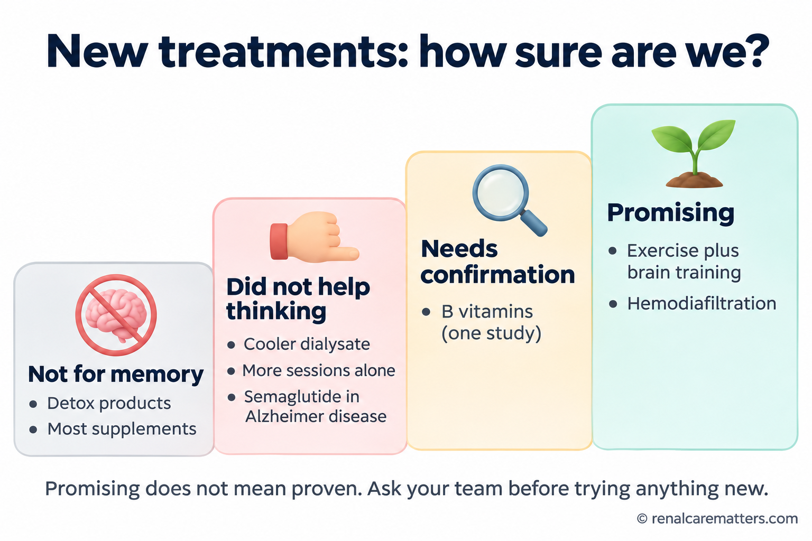
Not every new treatment is equally proven. Exercise with brain training and hemodiafiltration show promising signals; others did not help thinking or still need confirmation. Promising does not mean proven.Hindi pare-pareho ang patunay sa bawat bagong gamutan. Maaasahan ang ehersisyo na may brain training at ang hemodiafiltration; ang iba ay hindi nakatulong sa pag-iisip o kailangan pang makumpirma. Ang maaasahan ay hindi pa nangangahulugang napatunayan.Dili parehas ang pamatuod sa matag bag-ong pagtambal. Maayo ang dagway sa ehersisyo nga adunay brain training ug sa hemodiafiltration; ang uban wala makatabang sa panghunahuna o kinahanglan pa makumpirma. Ang maayo ang dagway dili pa nagpasabot nga napamatud-an.E pare-pareu ing patunay king balang bayung panulu. Maasahan ing ehersisyu a atin brain training at ing hemodiafiltration; deng aliwa e la mekatulung king pamanisip o kailangan pang makumpirma. Ing maasahan e pa buring sabian a mepatunayan.
| ApproachParaanPamaagiParalan | What studies foundAng natuklasan ng pag-aaralAng nakaplagan sa pagtuonIng akit da ring pamag-aral | Where it standsKalagayanKahimtangKalagayan |
|---|---|---|
| Hemodiafiltration (HDF), a type of dialysis that removes more large waste moleculesHemodiafiltration (HDF), isang uri ng dialysis na nag-aalis ng mas maraming malalaking dumiHemodiafiltration (HDF), usa ka matang sa dialysis nga mokuha og mas daghang dagkong hugawHemodiafiltration (HDF), metung a klasi ning dialysis a alisan ing mas dakal a maragul a dinat | In a large trial, people on HDF reported a slower decline in their own thinking over about 2½ years than people on standard high-flux HDSa isang malaking trial, ang mga nasa HDF ay nag-ulat ng mas mabagal na paghina ng sariling pag-iisip sa loob ng mga 2½ taon kaysa sa nasa karaniwang high-flux HDSa usa ka dakong trial, ang mga anaa sa HDF nagreport og mas hinay nga paghuyang sa kaugalingong panghunahuna sulod sa mga 2½ ka tuig kaysa sa anaa sa kasagarang high-flux HDKing metung a maragul a trial, deng atyu king HDF mag-report mas mabagal a pamaglambut ning sariling pamanisip king lagyu 2½ banwa kesa kareng atyu king karaniwang high-flux HD | Promising; based on how people rated themselves, not on memory testsMaaasahan; batay sa sariling pagtatasa, hindi sa test ng memoryaMaayo ang dagway; base sa kaugalingong pagtimbang, dili sa pagsulay sa memoryaMaasahan; batay king sariling pamagtasa, e king test ning memorya |
| Exercise and brain training during dialysisEhersisyo at brain training habang nagda-dialysisEhersisyo ug brain training panahon sa dialysisEhersisyu at brain training kabang magda-dialysis | Better global thinking score after three months in a small trial; the main planning test did not improveMas magandang marka sa pangkalahatang pag-iisip pagkatapos ng tatlong buwan sa maliit na trial; hindi bumuti ang pangunahing test sa pagpaplanoMas maayo nga marka sa kinatibuk-ang panghunahuna human sa tulo ka bulan sa gamay nga trial; wala miuswag ang nag-unang pagsulay sa pagplanoMas mayap a marka king pangkalahatang pamanisip kaibat ning atlung bulan king malati a trial; e mi-unlad ing pangunahing test king pamagplanu | Encouraging, safe, and good for overall healthNakakahikayat, ligtas, at mabuti sa pangkalahatang kalusuganMakapadasig, luwas, ug maayo sa kinatibuk-ang panglawasMakapagsikan, ligtas, at mayap king pangkalahatang kalusugan |
| Cooler dialysate or more frequent sessionsMas malamig na dialysate o mas madalas na sessionMas bugnaw nga dialysate o mas kanunay nga sessionMas malamig a dialysate o mas maralas a session | Small or older trials did not show better thinkingHindi nagpakita ng mas magandang pag-iisip ang maliliit o lumang trialWala nagpakita og mas maayo nga panghunahuna ang gagmay o karaan nga trialE la pekit mas mayap a pamanisip deng malati o matuang trial | Not proven for thinking; may still be used for other reasonsHindi napatunayan para sa pag-iisip; maaari pa ring gamitin sa ibang dahilanWala napamatud-an para sa panghunahuna; mahimo gihapong gamiton sa laing rasonE mepatunayan para king pamanisip; malyari pa ring gamitan king aliwang dahilan |
| Kidney transplantKidney transplantKidney transplantKidney transplant | Some memory and speed measures improve after transplant; overall thinking scores often stay similarBumubuti ang ilang sukat ng memorya at bilis pagkatapos ng transplant; madalas pareho ang pangkalahatang markaMuuswag ang pipila ka sukod sa memorya ug kapaspas human sa transplant; kasagaran parehas ang kinatibuk-ang markaMumayap ing aliwang sukat ning memorya at bilis kaibat ning transplant; maralas pareu ing pangkalahatang marka | A thinking test alone should not decide transplant eligibilityHindi dapat ang test sa pag-iisip lamang ang magpasya kung puwede sa transplantDili angay nga ang pagsulay sa panghunahuna ra ang modesisyon kung puwede sa transplantE dapat ing test king pamanisip mu ing magpasiya nung malyari king transplant |
| B vitamins (thiamin with folic acid)B vitamins (thiamin at folic acid)B vitamins (thiamin ug folic acid)B vitamins (thiamin at folic acid) | One 2026 trial in people on hemodialysis reported better thinking scores after nearly two yearsIsang trial noong 2026 sa mga nagda-hemodialysis ang nag-ulat ng mas magandang marka pagkatapos ng halos dalawang taonUsa ka trial sa 2026 sa mga nagda-hemodialysis ang nagreport og mas maayo nga marka human sa hapit duha ka tuigMetung a trial king 2026 kareng magda-hemodialysis ing mag-report mas mayap a marka kaibat ning malapit adwang banwa | Needs confirmation before it becomes standard; ask before taking high dosesKailangang makumpirma bago maging pamantayan; magtanong muna bago uminom ng mataas na dosisKinahanglan makumpirma una mahimong sumbanan; pangutana una sa dili pa moinom og taas nga dosisKailangan pang makumpirma bayu maging pamantayan; magkutang muna bayu uminum matas a dosis |
| Gut-toxin binders, probiotics, "detox" productsGut-toxin binder, probiotic, mga produktong "detox"Gut-toxin binder, probiotic, mga produkto nga "detox"Gut-toxin binder, probiotic, produktung "detox" | May change lab markers; no proven benefit for thinking in peopleMaaaring baguhin ang lab marker; walang napatunayang benepisyo sa pag-iisip ng taoMahimong usbon ang lab marker; walay napamatud-an nga kaayohan sa panghunahuna sa tawoMalyari nang bayuan ing lab marker; ala mepatunayang benepisyu king pamanisip ning tau | Not recommended for memory; some herbal "detox" products can harm the kidneysHindi inirerekomenda para sa memorya; may herbal na "detox" na maaaring makasira sa batoDili girekomenda para sa memorya; adunay herbal nga "detox" nga makadaot sa kidneyE irekomenda para king memorya; atin herbal a "detox" a malyaring makasira king batu |
| Diabetes and weight medicines (semaglutide)Gamot sa diabetes at timbang (semaglutide)Tambal sa diabetes ug timbang (semaglutide)Gamot king diabetes at timbang (semaglutide) | Two large trials in early Alzheimer disease found no slowing of declineWalang nakitang pagbagal ng paghina sa dalawang malaking trial sa maagang Alzheimer diseaseWalay nakita nga paghinay sa paghuyang sa duha ka dakong trial sa sayong Alzheimer diseaseAla akit pamagbagal ning pamaglambut king adwang maragul a trial king maagang Alzheimer disease | Use for kidneys, heart, and diabetes when indicated, not for memoryGamitin para sa bato, puso, at diabetes kung kailangan, hindi para sa memoryaGamita para sa kidney, kasingkasing, ug diabetes kung gikinahanglan, dili para sa memoryaGamitan para king batu, pusu, at diabetes nung kailangan, e para king memorya |
How families and caregivers can helpPaano makakatulong ang pamilya at tagapag-alagaUnsaon pagtabang sa pamilya ug tig-atimanNung kapilan makatulung ing pamilya at tagapag-asikasu
- Come to visits when invited, and share what you have noticed at home, with the patient's permission.Sumama sa konsulta kapag inanyayahan, at ibahagi ang napansin sa bahay, nang may pahintulot ng pasyente.Uban sa konsulta kung gidapit, ug ipaambit ang namatikdan sa balay, uban ang pagtugot sa pasyente.Sumabi king konsulta nung imbitan, at ibahagi ing apansin king bale, a atin pahintulot ning pasyente.
- Use a weekly pill organizer and an up-to-date medicine list; ask the pharmacist to help set it up.Gumamit ng lingguhang pill organizer at napapanahong listahan ng gamot; magpatulong sa pharmacist.Gamit og semana-semana nga pill organizer ug updated nga lista sa tambal; pangayo og tabang sa pharmacist.Gumamit lingguhang pill organizer at updated a listahan ning gamot; magpatulung king pharmacist.
- Ask for written, simple instructions, and use "teach-back": the patient repeats the plan in their own words.Humingi ng nakasulat at simpleng bilin, at gamitin ang "teach-back": inuulit ng pasyente ang plano sa sarili niyang salita.Pangayo og sinulat ug simple nga tambag, ug gamita ang "teach-back": usbon sa pasyente ang plano sa iyang kaugalingong pulong.Mangayu nakasulat at simpleng bilin, at gamitan ing "teach-back": ulitan ning pasyente ing planu king sariling amanu na.
- Set phone alarms or a wall calendar for medicines, dialysis days, and laboratory tests.Maglagay ng alarm sa telepono o kalendaryo sa dingding para sa gamot, araw ng dialysis, at laboratory test.Butang og alarm sa telepono o kalendaryo sa bungbong para sa tambal, adlaw sa dialysis, ug laboratory test.Magbili alarm king telepunu o kalendaryu king pader para king gamot, aldo ning dialysis, at laboratory test.
- Respect independence. A thinking test score does not decide whether a person can make their own decisions; support them to decide, and plan ahead together while they can.Igalang ang kalayaan. Hindi ang marka sa test ang nagpapasya kung kaya ng tao na magdesisyon; suportahan siya sa pagpapasya, at magplano nang maaga habang kaya pa.Tahura ang kagawasan. Dili ang marka sa pagsulay ang modesisyon kung makahimo ba ang tawo og kaugalingong desisyon; suportahi siya sa pagdesisyon, ug magplano og sayo samtang makahimo pa.Igalang ing kalayaan. E ing marka king test ing magpasiya nung kaya ning tau ing magdesisyun; suportan ye king pamagpasiya, at magplanu kayu agad kabang kaya na pa.
- Look after yourself too. Caregiving is demanding; share tasks within the family and ask the team about support.Alagaan din ang sarili. Mabigat ang pag-aalaga; hatiin ang gawain sa pamilya at magtanong sa team tungkol sa suporta.Atimana usab ang kaugalingon. Bug-at ang pag-atiman; bahina ang buluhaton sa pamilya ug pangutana sa team bahin sa suporta.Asikasuan mu rin ing sarili mu. Mabigat ing pamag-asikasu; atian ing obra king pamilya at magkutang king team tungkul king suporta.
Simple tools help: a weekly pill organizer, a short written plan, phone reminders, and teach-back, where the patient explains the plan in their own words. The patient stays in charge.Nakakatulong ang simpleng kagamitan: lingguhang pill organizer, maikling nakasulat na plano, paalala sa telepono, at teach-back, kung saan ipinapaliwanag ng pasyente ang plano sa sarili niyang salita. Ang pasyente pa rin ang may hawak.Makatabang ang simple nga himan: semana-semana nga pill organizer, mubo nga sinulat nga plano, pahinumdom sa telepono, ug teach-back, diin ipasabot sa pasyente ang plano sa iyang kaugalingong pulong. Ang pasyente gihapon ang nagdumala.Makatulung ing simpleng kasangkapan: lingguhang pill organizer, maikling nakasulat a planu, paalala king telepunu, at teach-back, nung nu ipaliwanag ning pasyente ing planu king sariling amanu na. Ing pasyente pa rin ing mamaun.
Use this checklist before a visit. Copy it, fill it in, and bring it. It needs no names or identification numbers.Gamitin ang checklist na ito bago ang konsulta. Kopyahin, sagutan, at dalhin. Hindi kailangan ng pangalan o ID number.Gamita kini nga checklist sa dili pa ang konsulta. Kopyaha, sulati, ug dad-a. Dili kinahanglan og ngalan o ID number.Gamitan me ing checklist a ini bayu ing konsulta. Kopyan, sagutan, at darang. E kailangan lagyu o ID number.
Copy-ready checklist:Checklist na handang kopyahin:Checklist nga andam kopyahon:Checklist a makasadyang kopyan:
Questions to ask your kidney teamMga tanong para sa iyong kidney teamMga pangutana para sa imong kidney teamKutang para king kidney team mu
- Could any of my medicines be affecting my thinking, and are the doses right for my kidneys?Maaari bang nakakaapekto sa pag-iisip ko ang alinman sa aking gamot, at tama ba ang dosis para sa aking bato?Mahimo bang nag-apekto sa akong panghunahuna ang bisan unsang tambal nako, ug husto ba ang dosis para sa akong kidney?Malyari ba nang apektuan ning nanumang gamot ku ing pamanisip ku, at tama ba ing dosis para king batu ku?
- Do I have anemia, a sugar or salt problem, or a sleep or mood problem that we should treat?May anemia ba ako, problema sa asukal o asin, o problema sa tulog o damdamin na dapat gamutin?Aduna ba koy anemia, problema sa asukal o asin, o problema sa katulog o pagbati nga angay tambalan?Atin ku bang anemia, problema king asukal o asin, o problema king tulug o damdamin a dapat panuluan?
- Is my blood pressure dropping during dialysis, and can my fluid removal or session length be adjusted?Bumababa ba ang presyon ko habang nagda-dialysis, at maaari bang ayusin ang pag-alis ng tubig o haba ng session?Mius-os ba ang akong presyon panahon sa dialysis, ug mahimo bang usbon ang pagkuha sa tubig o gitas-on sa session?Mababa ba ing presyon ku kabang magda-dialysis, at malyari bang ayusan ing pamaglako danum o kabaluan ning session?
- Should I have a thinking test, and when is the best time to do it?Dapat ba akong magpa-test sa pag-iisip, at kailan ang pinakamainam na oras?Angay ba ko magpa-test sa panghunahuna, ug kanus-a ang labing maayong oras?Dapat ku bang magpa-test king pamanisip, at kapilan ing pekamayap a oras?
- What exercise is safe for me, and is there a program I can join?Anong ehersisyo ang ligtas para sa akin, at may programa ba akong masasalihan?Unsang ehersisyo ang luwas para nako, ug aduna bay programa nga akong maapilan?Nanung ehersisyu ing ligtas para kanaku, at atin bang programa a asalian ku?
- Who should my family call if my thinking suddenly changes?Sino ang dapat tawagan ng pamilya ko kung biglang magbago ang pag-iisip ko?Kinsa ang angay tawagan sa akong pamilya kung kalit nga mausab ang akong panghunahuna?Ninu ing dapat tawagan ning pamilya ku nung biglang mibayu ing pamanisip ku?
Questions patients often askMga tanong na madalas itanong ng pasyenteMga pangutana nga kanunay ipangutana sa pasyenteKutang a maralas kutnan da ring pasyente
The kidney–brain axis: a convergence model
Cognitive impairment in chronic kidney disease (CKD) is common, under-recognized, and clinically consequential: it erodes the very skills (planning, sustained attention, working memory) that complex kidney care demands, and it is associated with nonadherence, hospitalization, withdrawal from dialysis, and death. The useful mental model is convergence rather than a single "uremic" lesion. Shared small-vessel disease, retained solutes, dialysis-related hemodynamic stress, and a background of inflammation, anemia, sleep and mood disorders, and drug accumulation overlap within the same patient, in proportions that differ from person to person.
The dominant domains are executive function, attention, and processing speed, a frontal-subcortical "vascular" profile; memory is involved less consistently. That profile matters at the bedside, because a screening instrument weighted toward recall can miss impairment that is real and functionally important. It also explains why the problem is easy to misattribute to fatigue, depression, or "noncompliance".
This guide separates four rungs of certainty throughout: established physiology, randomized evidence on patient-important outcomes, observational associations, and mechanistic hypotheses. Most of the kidney–brain literature sits on the third and fourth rungs. No therapy has yet been shown in a definitive randomized trial to prevent or reverse CKD-associated cognitive decline, so management today rests on treating identifiable contributors and protecting the vascular bed that the kidney and brain share.
Evidence labels used in this guide
Each claim is tagged by design (guideline, randomized trial, observational association, mechanism) and by outcome class (diagnosed dementia, objective cognitive test, patient-reported cognition, biomarker or imaging, kidney or cardiovascular outcome). A randomized trial with a biomarker or patient-reported endpoint is still a biomarker or patient-reported finding. These labels describe directness, not formal Grading of Recommendations Assessment, Development and Evaluation (GRADE) ratings; guideline grades are quoted in each body's own vocabulary.
How common, in whom, and what the risk markers mean
Prevalence. A 2024 systematic review and meta-analysis (50 studies, 25,289 adults) reported a pooled prevalence of cognitive impairment of 40% (95% confidence interval [CI] 33–46%), with attention and executive dysfunction the most common manifestations. Estimates rose with age, diabetes, and hypertension. Heterogeneity was extreme (I² 99%) and publication bias was present, because instruments, cutoffs, languages, and samples differ; treat these as screen-defined burden, not diagnosed dementia.
| Population | Pooled prevalence (95% CI) | What it can and cannot tell you |
|---|---|---|
| Nondialysis CKD | 32% (25–38%) | Burden rises across CKD stages; a meta-analytic average across instruments |
| Maintenance hemodialysis (HD) | 53% (38–69%) | Highest burden; HD cohorts are older and carry more cerebrovascular disease |
| Peritoneal dialysis (PD) | 39% (26–53%) | Lower than HD, but PD selection (younger, more independent) confounds the comparison |
| Kidney transplant recipients | 26% (15–38%) | Lowest burden; transplant selection excludes many with established impairment |
| All CKD | 40% (33–46%) | I² 99%; publication bias present; study-defined impairment, not dementia |
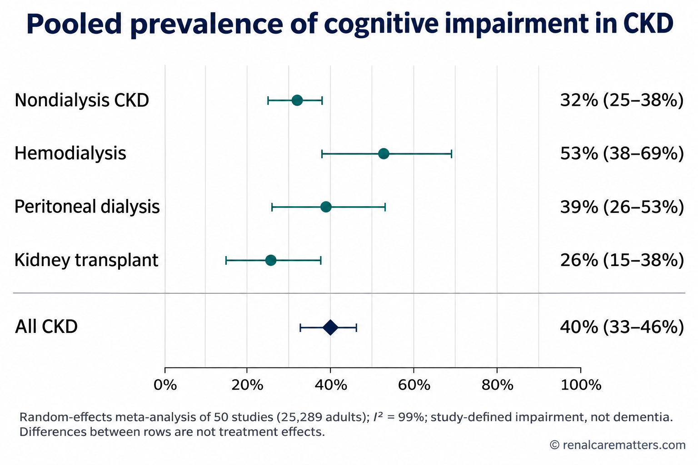
Pooled prevalence estimates with 95% confidence intervals on a common 0–100% axis (Zhang et al., 2024). Heterogeneity was extreme, and selection differs by modality, so the rows describe screen-defined burden, not the effect of a treatment.
- CKD
- Chronic kidney disease
- I²
- Proportion of variation between studies due to heterogeneity
Do not read the modality gradient as a treatment effect. A 2026 meta-analysis of 26 cohort studies (326,216 patients) reported worse cognition (standardized mean difference −0.46) and higher dementia incidence (odds ratio 1.68) with HD than with PD, but every included study was observational and the dementia estimate was highly heterogeneous (I² 94%). Confounding by indication (who is offered and chooses PD) is the leading explanation. Modality choice should remain shared and individualized.
Kidney markers and incident dementia. In 202,702 UK Biobank participants aged 60 years or older (6,042 incident dementia cases over up to 15 years), combined creatinine–cystatin C estimated glomerular filtration rate (eGFR) <60 versus ≥90 mL/min/1.73 m² was associated with a fully adjusted hazard ratio (HR) of 1.42 (1.28–1.58). Urine albumin-to-creatinine ratio (UACR) 3–30 and >30 mg/mmol, versus <3 mg/mmol, carried HRs of 1.16 (1.07–1.26) and 2.24 (1.79–2.80). The Atherosclerosis Risk in Communities (ARIC) cohort independently found albuminuria consistently associated with dementia at midlife and older age, while lower eGFR was associated only when estimated from cystatin C or β₂-microglobulin, not creatinine, a reminder that creatinine-based eGFR in frail, sarcopenic adults can obscure risk. These are relative hazards from cohorts; they are not personal probabilities, and no trial has shown that lowering UACR prevents dementia.
Acute kidney injury (AKI) counts too. A 2026 meta-analysis (49 studies, 11.3 million participants) associated AKI with stroke (pooled adjusted HR 1.35, 1.20–1.52), delirium (adjusted odds ratio 1.76, 1.42–2.17), and dementia (adjusted HR 1.64, 1.41–1.89), with a stage gradient for stroke. The association does not establish causation, but it argues for asking about cognition after an AKI episode, particularly in older adults.
Frailty and modifiable factors. Frail adults with CKD had about three times the odds of cognitive impairment (odds ratio 3.13, 1.92–5.12; 17 studies, 129,868 patients; 2026). An August 2026 UK Biobank CKD cohort (16,083 participants, 806 dementia diagnoses over a mean 13.8 years) found that hypertension, diabetes, depression, hearing loss, and lower leisure or social activity remained associated with dementia after false-discovery-rate adjustment, while moderate physical activity was associated with lower risk. A 2026 umbrella review of hemodialysis cohorts added female sex, diabetes, cerebrovascular disease, low hemoglobin, inflammatory markers, low-flux dialysis, and intradialytic hypotension as correlates; higher education was protective. Only two associations reached moderate certainty. These lists support asking about the factors; they do not show that modifying any single one prevents dementia.
Normal physiology first, then what CKD breaks
Start from normal physiology. The brain and kidney are both low-resistance, high-flow organs that receive continuous perfusion at high volume, protected by autoregulation and by specialized barriers (the glomerular filtration barrier and the blood–brain barrier [BBB]). Their small penetrating arterioles are exposed to near-systemic pressure over a short distance, which makes both beds sensitive to pulsatile load and to the same injuries: hypertension, diabetes, and arterial stiffness. When disease narrows the autoregulatory range, each organ becomes dependent on perfusion pressure in a way that healthy organs are not.
| Pathway | Mechanism | Strength of evidence and practical boundary |
|---|---|---|
| Shared small-vessel disease | Endothelial dysfunction and arteriolosclerosis produce white matter hyperintensities, lacunes, and microbleeds; albuminuria is the renal counterpart of the same systemic microvascular injury. White matter injury disrupts frontal-subcortical circuits, slowing processing speed and executive function. | Human cohort and imaging data (UK Biobank, ARIC). Mixed vascular and neurodegenerative pathology is common. An eGFR or UACR value does not diagnose a brain disorder. |
| Retained solutes and the gut–kidney–brain pathway | Colonic bacterial metabolism of tryptophan and tyrosine yields precursors of indoxyl sulfate and p-cresyl sulfate. These protein-bound solutes accumulate as GFR falls and are poorly removed by diffusive HD. Experimental work implicates aryl hydrocarbon receptor signaling, oxidative stress, endothelial and BBB dysfunction, and neuroinflammation. | Human associations plus animal and in vitro work (2025 JASN review; metabolomic profiling in dialysis). A causal contribution in humans, and a cognition-directed target, remain unproven. Urea clearance (Kt/V) is not a proxy for clearance of protein-bound or middle molecules. |
| Dialysis-related cerebral hypoperfusion | Ultrafiltration (UF) and the fall in blood pressure (BP) during HD challenge cerebral autoregulation, whose lower limit varies widely between patients. Transcranial Doppler shows middle cerebral artery flow velocity falling during dialysis in proportion to UF volume. | Direct physiology: cerebral desaturation in 23.5% of 635 monitored sessions; BP poorly predicted it; intradialytic cerebral ischemia, but not hypotension, correlated with lower executive function at 12 months (pilot data). Not a measure of stroke or dementia. |
| Systemic and pharmacologic load | Anemia, inflammation, metabolic acidosis, dysnatremia, hypoglycemia, hyperparathyroidism, sleep apnea, depression, and accumulation of renally cleared central nervous system (CNS)-active drugs lower cognitive reserve or cause frank encephalopathy. | Contributions vary; several are reversible once identified. Treat each on its own merits; a symptom checklist cannot apportion causality. |
The causal chain therefore runs in both directions. Cognitive impairment degrades medication management, fluid and diet adherence, and attendance; worse control then accelerates kidney and vascular injury. This feedback loop is the clinical reason to screen, simplify regimens, and involve caregivers, even when the underlying lesion cannot be reversed.

Four converging pathways. Panels mark observed human associations with solid lines and mechanistic hypotheses with dashed lines; none of the panels implies that a single pathway explains cognitive decline in an individual patient.
- AhR
- Aryl hydrocarbon receptor
- BBB
- Blood–brain barrier
- IS
- Indoxyl sulfate
- PCS
- p-Cresyl sulfate
- MCA
- Middle cerebral artery
- rSO₂
- Regional cerebral oxygen saturation
- UF
- Ultrafiltration
- WMH
- White matter hyperintensities
Alzheimer blood biomarkers are kidney-sensitive
A 2026 systematic review (93 studies, 62,503 participants) found lower eGFR associated with higher blood neurofilament light chain, glial fibrillary acidic protein, amyloid-β40, and phosphorylated tau 181, whereas cerebrospinal fluid markers showed no consistent association, suggesting reduced clearance rather than more neurodegeneration. In a 2026 multicenter amyloid positron emission tomography study, standard plasma p-tau217 cutoffs lost accuracy in CKD (accuracy 0.65), improving to 0.83 with a subgroup-specific cutoff. In the Brain in Kidney Disease cohort, serum brain-derived tau rose steeply as eGFR fell, while the p-tau217/brain-derived tau ratio was largely unaffected. Interpret these assays only through specialist, assay-specific pathways; there is no validated renal correction factor, so this guide offers no cutoff tool.
Hours to days: delirium, stroke, and encephalopathy
Tempo is the first branch point. Delirium, stroke, seizure, and metabolic encephalopathy present over hours to days and fluctuate; they demand same-day assessment and override any outpatient screening result.

Tempo-first pathway. Sudden focal signs go straight to the stroke pathway; fluctuating change is delirium until proven otherwise; gradual decline gets a structured, collateral-informed assessment and a review of reversible contributors.
- 4AT
- 4 'A's Test for delirium
- CAM-ICU
- Confusion Assessment Method for the Intensive Care Unit
- ICDSC
- Intensive Care Delirium Screening Checklist
- HD
- Hemodialysis
- MoCA
- Montreal Cognitive Assessment
Weeks to months: a structured, function-anchored workup
For change over weeks to months, the 2025 guidance from the Cognitive Decline in Nephro-Neurology: European Cooperative Target (CONNECT) network (expert consensus, separate from KDIGO graded recommendations) supports a structured, function-anchored assessment rather than screening by a single score.
Timing relative to dialysis matters more than most protocols acknowledge. Cognition fluctuates across the dialysis cycle, and intradialytic testing captures the hemodynamic trough. For serial assessment, test at a consistent, clinically stable time, ideally on a non-dialysis day or before treatment, and never treat a score obtained during acute illness or intradialytic symptoms as a comparable baseline. Practice effects inflate repeat scores, so a stable score on retesting may still conceal decline.
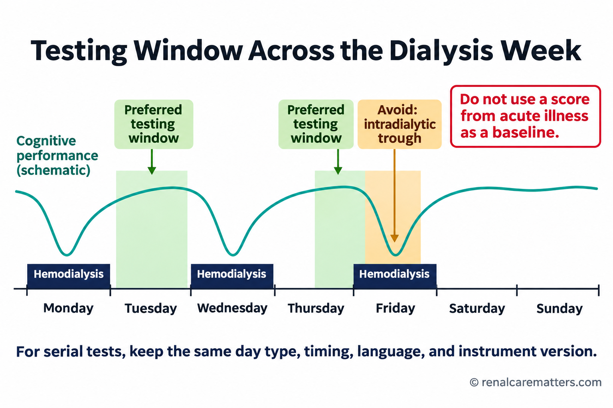
Schematic only. Cognition fluctuates across the dialysis cycle; for serial testing, keep the timing, instrument version, and language the same, ideally on a non-dialysis day or before treatment.
Longitudinal data are sobering but selected. In a November 2026 longitudinal HD cohort, 247 patients were enrolled and 90 were retested after two years; MoCA fell by a mean 1.8 points, and 37 of 90 (41%) met the authors' definition of decline (a fall of more than 2 points), with steeper decline in men in adjusted analyses. With substantial attrition, this is not a general progression rate, a validated individual threshold, or a basis for a sex-specific risk score.
The brain during hemodialysis
Hemodialysis compresses about two to three days of fluid and solute removal into a few hours. Plasma refilling lags behind UF, intravascular volume falls, and the circulation defends BP through vasoconstriction and heart rate. In patients with impaired autoregulation, cerebral perfusion can fall even while brachial systolic BP (SBP) stays in an acceptable range.
Three findings frame practice. First, near-infrared spectroscopy detected a relative cerebral desaturation of more than 15% in 23.5% of 635 sessions in 58 prevalent patients; only 31.9% of these events were symptomatic, BP predicted them poorly, and the individual lower limit of autoregulation varied widely (mean arterial pressure 74.1 ± 17.6 mm Hg). Second, middle cerebral artery flow velocity declined during dialysis in proportion to UF volume, and the fall tracked intradialytic decline in global and executive function and, over 12 months, progression of white matter hyperintensities. Third, in a cohort of 118,394 maintenance HD patients, a mean ultrafiltration rate (UFR) >13 versus ≤13 mL/kg/h was associated with higher all-cause mortality (adjusted HR 1.31, 1.28–1.34). None of these establishes a cerebral-perfusion threshold, and the UFR data are mortality associations, not cognitive outcomes.

The lower limit of cerebral autoregulation varies between patients, so the same intradialytic blood pressure can protect one brain and underperfuse another. In a pilot study, blood pressure poorly predicted cerebral desaturation (MacEwen et al., 2017).
- MAP
- Mean arterial pressure
- BP
- Blood pressure
The KDIGO Controversies Conference on BP and volume management in dialysis (2020, consensus) emphasizes individualizing the prescription by integrating comorbidity, intradialytic hemodynamic patterns, and patient preference within a narrow therapeutic window. Practically:
| Lever | Rationale | Caveat |
|---|---|---|
| Limit interdialytic weight gain | Sodium restriction reduces thirst and the volume to be removed | Dietary counseling must not compromise nutrition |
| Extend time or add a session | Removes the same volume at a lower UFR | Cost, chair availability, and Philippine Health Insurance Corporation (PhilHealth) session limits |
| Reassess target weight | Recurrent symptoms may mean the target is set too low | Volume overload carries its own cardiovascular and cognitive risk |
| Review antihypertensive timing | Pre-dialysis doses can deepen intradialytic hypotension | Interdialytic hypertension must still be controlled |
| Document symptom timing | Links cognitive complaints to the hemodynamic profile | Symptoms are not a validated ischemia detector |
What has not worked for cognition. The Frequent Hemodialysis Network (FHN) trials found no benefit of six versus three sessions per week on executive function (Trail-Making Test B) or global cognition at 12 months. The cooler-dialysate feasibility trial (ECHECKED) (35 °C vs 36.5 °C) randomized 43, completed 27, and found no between-group difference in MoCA change. The cluster trial of center-wide personalized cooler dialysate (MyTEMP) showed no reduction in its cardiovascular composite and did not assess cognition. Review recurrent instability for the usual clinical reasons rather than prescribing a blanket "neuroprotective" protocol.
No form replaces the emergency pathway
A person who becomes acutely confused, aphasic, or weak during dialysis needs the stroke and emergency pathway, not a UFR calculation. The session review tool is for retrospective review of stable outpatients with recurrent symptoms.
Drug accumulation: the most reversible contributor
Medication review is the highest-yield intervention available, because drug-induced cognitive impairment is common, often reversible, and frequently missed in CKD. Work through each drug: indication, renal handling, CNS activity, dose relative to current kidney function, stating eGFR or creatinine clearance (CrCl) and the modality, and whether a safer alternative exists.
| Class | Examples | Kidney-relevant concern |
|---|---|---|
| First-generation antihistamines | Diphenhydramine; chlorphenamine, common in Philippine over-the-counter (OTC) cold and allergy combinations | Strong anticholinergic effect; delirium in older adults |
| Other anticholinergics | Oxybutynin, tricyclic antidepressants, hyoscine | Cumulative anticholinergic burden |
| Muscle relaxants | Baclofen | Renally cleared; encephalopathy hospitalization rises as eGFR falls (observational) |
| Gabapentinoids | Gabapentin, pregabalin | Renally cleared; require dose reduction; sedation, dizziness, falls |
| Opioids | Morphine, codeine, tramadol | Active metabolites accumulate; tramadol also lowers seizure threshold |
| Sedative-hypnotics | Benzodiazepines, zolpidem | Psychomotor slowing, falls, delirium |
| Antimicrobials and antivirals | Cefepime, acyclovir, valacyclovir | Neurotoxicity with excess exposure in reduced clearance |
| Others | Metoclopramide, lithium | Extrapyramidal effects; narrow therapeutic index |
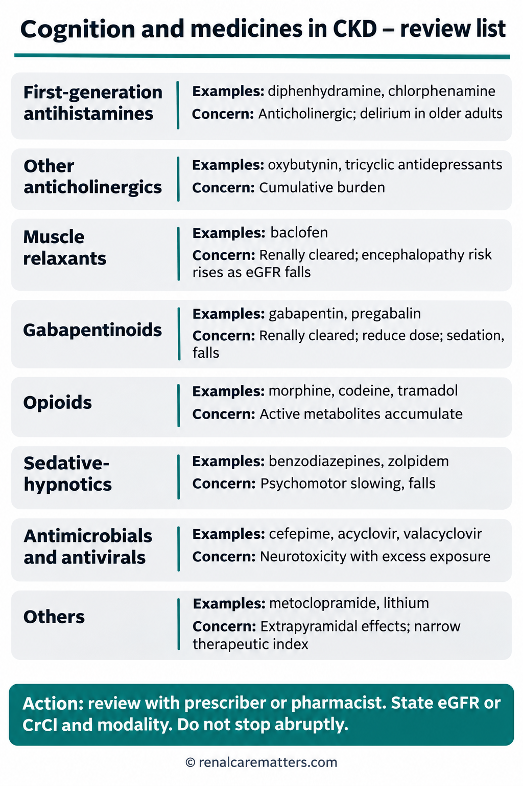
Drug accumulation is the most reversible contributor. Review each CNS-active drug against current kidney function and modality; do not stop baclofen, benzodiazepines, or gabapentinoids abruptly.
- CKD
- Chronic kidney disease
- eGFR
- Estimated glomerular filtration rate
- CrCl
- Creatinine clearance
- CNS
- Central nervous system
Flag each for review with the clinician or pharmacist rather than assigning additive "burden points" or stopping automatically; abrupt withdrawal of baclofen, benzodiazepines, or gabapentinoids carries its own risk. Any drug-specific dosing tool should use a versioned, jurisdiction-specific label, state the renal metric explicitly, and handle AKI separately.
Copy-ready medication and cognition review note:
What we can do today
No intervention has definitive randomized evidence for preventing or reversing CKD-associated cognitive decline. The rational strategy is to treat each contributor on its own indication and to protect the shared vascular bed.
| Strategy | Evidence and grade | How to apply it |
|---|---|---|
| Blood pressure (nondialysis CKD) | KDIGO 2021 suggests a target systolic BP <120 mm Hg, when tolerated, using standardized office measurement (2B). In the Systolic Blood Pressure Intervention Trial (SPRINT) extended follow-up (median 7 years), intensive control reduced the composite of mild cognitive impairment (MCI) or probable dementia (HR 0.89, 0.79–0.99) and MCI (0.87, 0.76–1.00); probable dementia alone was inconclusive (0.86, 0.72–1.02). | SPRINT excluded diabetes and prior stroke and was not a dialysis trial; do not transfer the target to dialysis or to unstandardized readings. Individualize in frail older adults and those with orthostatic symptoms. |
| Anemia | KDIGO 2026 recommends targeting hemoglobin below 11.5 g/dL in adults treated with erythropoiesis-stimulating agents (ESAs) (Recommendation 3.3.1, 1D). Low hemoglobin is a cognitive-impairment correlate in HD. | Treat anemia for symptoms and transfusion avoidance; do not intensify ESA or iron to improve a cognitive score. |
| Diabetes and cardiorenal therapy | Sodium–glucose cotransporter 2 (SGLT2) inhibitors and glucagon-like peptide-1 (GLP-1) receptor agonists have proven kidney and cardiovascular indications (e.g., FLOW for semaglutide). A Korean cohort associated SGLT2 inhibitor use with lower Alzheimer and vascular dementia incidence (observational). Oral semaglutide did not slow early Alzheimer disease in evoke or evoke+ (3,808 patients; CDR-SB differences −0.08 and 0.10). | Use for their kidney and cardiovascular indications; do not prescribe for cognition. Avoid hypoglycemia, a direct cause of acute confusion. |
| Physical activity and rehabilitation | Moderate activity is associated with lower dementia risk in CKD; exercise improves physical function. | Individualized activity, intradialytic exercise where available; see the Interventions Made to Preserve Cognitive Function Trial (IMPCT) below. |
| Hearing, sleep, mood, social engagement | Associated with dementia risk in CKD cohorts (observational). | Treat on their own merits: hearing assessment, sleep apnea evaluation, depression care, and social prescribing. |
A trial of geriatric assessment that did not move the needle
The 2026 cluster-randomized geriatric assessment trial (GOAL) (15 Australian centers, 240 frail adults aged 65 or older with eGFR ≤59) found that a single outpatient comprehensive geriatric assessment did not improve goal attainment at three months (Goal Attainment Scaling 45.2 vs 43.7) or secondary outcomes. The lesson is not that geriatric input is futile but that one-off assessments need integration into ongoing kidney care to change outcomes.
What the trials actually measured
| Intervention | Design and population | What was measured | Interpretation |
|---|---|---|---|
| Intradialytic cognitive plus exercise training (IMPCT) | 2×2 factorial randomized controlled trial (RCT), 121 adults within 3 years of starting HD | Primary: 3-month executive function, neutral. Secondary: MoCA improved by 2.1 points (0.4–3.9) with combined training vs standard care | Short-term secondary signal; durability and dementia prevention untested. The 2026 virtual-reality training protocol (VIRTUAL) is a feasibility study, not efficacy evidence. |
| High-volume hemodiafiltration (HDF) (CONVINCE) | RCT, 1,360 adults eligible for ≥23 L convection, median 30 months | Patient-Reported Outcomes Measurement Information System (PROMIS) cognitive function: raw within-arm change −0.95 (−2.23 to 0.34) with HDF vs −3.90 (−5.28 to −2.52) with high-flux HD; joint model favored HDF | Patient-reported, not objective cognition or dementia. The within-arm intervals are not a between-arm effect. A 2026 prespecified subgroup analysis found broadly consistent effects without clinically meaningful heterogeneity. |
| Thiamin plus folic acid | Double-blind RCT, 215 HD patients with cognitive impairment, 96 weeks (2026) | Alzheimer's Disease Assessment Scale–Cognitive (ADAS-Cog) improved with thiamin 90 mg plus folic acid 30 mg daily; homocysteine fell; adverse events lower | Single trial with an unusually large effect and very high folate doses; needs independent replication before it changes practice. |
| Cooler dialysate (ECHECKED; MyTEMP) | Feasibility RCT, 43 randomized, 27 completed; cluster RCT of center policy | No MoCA difference; MyTEMP cardiovascular composite neutral, cognition not assessed | Absence of benefit in an underpowered study is not proof of no effect. |
| More frequent HD (FHN) | Two RCTs, 6 vs 3 sessions per week | No benefit on executive or global cognition | Frequency alone is not a cognitive therapy. |
| Kidney transplantation | Longitudinal cohort (101 pre-transplant) and a 2026 systematic review (22 reports) | Episodic and verbal memory normalized; MMSE and Trail-Making did not change. Review: no consistent global improvement; low to very low certainty by domain | Some domains recover; others persist. A screening score should not act as an automatic eligibility filter; support decision-making and adherence instead. |
| Gut-derived toxin strategies | Oral carbon adsorbent (AST-120), probiotics, prebiotics, aryl hydrocarbon receptor antagonists (largely preclinical) | Biomarker changes | No proven cognitive benefit in CKD; not for clinical use for cognition. |
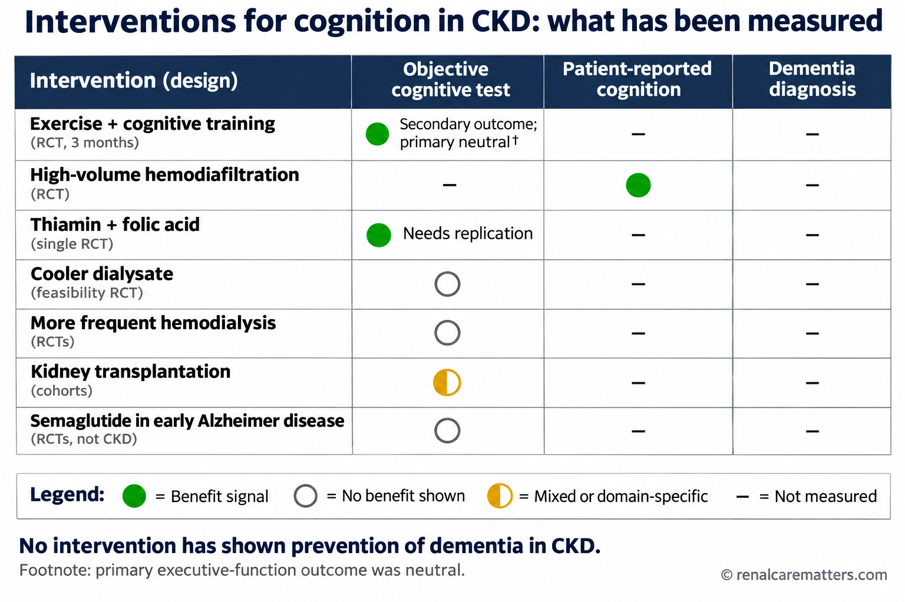
What each intervention has actually been tested against. Benefit signals so far are short-term, secondary, single-trial, or patient-reported; none has shown dementia prevention in CKD.
- CKD
- Chronic kidney disease
- RCT
- Randomized controlled trial
Reading the emerging evidence honestly
The most consistent signal so far is a patient-reported one (CONVINCE) and a short-term secondary objective one (IMPCT). Neither is a dementia outcome. Future trials need objective cognitive and functional endpoints, prespecified timing relative to dialysis, representative multilingual cohorts, accounting for competing mortality and missing follow-up, and enough duration to separate practice effects from sustained change.
Why there is no dementia risk calculator here
A 2026 systematic review identified 17 models predicting cognitive impairment, mild cognitive impairment, or cognitive frailty in CKD, most developed in HD populations. Some reported external areas under the curve of 0.75–0.90, but every model was at high risk of bias, calibration was rarely reported, and transportability across languages, education levels, and regions is unknown. That is why this guide does not offer a dementia-probability calculator, and why prevalence figures, hazard ratios, MoCA changes, UFR, or eGFR and UACR categories should never be converted into an individual dementia risk.
Three scenarios
Case 1: sudden change during dialysis. A 68-year-old man with diabetes becomes confused with slurred speech in the third hour of HD. His BP is 112/64 mm Hg and the UFR is 9 mL/kg/h. Reasoning: sudden focal speech disturbance is a stroke until proven otherwise. Stop UF, alert the physician, check capillary glucose, and activate the stroke pathway. Neither the acceptable BP nor the modest UFR excludes cerebral ischemia or hemorrhage.
Case 2: slow drift in a nondialysis patient. A 74-year-old woman with CKD G4 and UACR 80 mg/mmol has started missing tablets and a clinic visit over six months. Her daughter reports she now asks the same questions repeatedly. She takes a chlorphenamine-containing cold tablet most nights to sleep and was started on gabapentin for neuropathic pain at a dose not adjusted to her eGFR. Hemoglobin is 9.2 g/dL and she snores loudly. Reasoning: several reversible contributors coexist. Stop the nightly antihistamine with a sleep plan, reduce gabapentin to a renal dose, evaluate and treat anemia, refer for sleep study, and repeat a validated screen in her language once these are addressed, at a stable time, with her daughter present. Simplify the regimen with a weekly pill organizer and teach-back.
Case 3: transplant evaluation. A 55-year-old man on HD scores below the usual MoCA threshold on an intradialytic screen. Reasoning: an intradialytic score is not a comparable baseline. Repeat on a non-dialysis day; evaluate contributors; assess functional capacity and support for medication adherence. A single screen should not decide transplant candidacy, and some memory domains may improve after transplantation.
Applying this locally
Language and literacy. Screening instruments validated in English do not automatically transfer to Tagalog, Cebuano, Kapampangan, or other Philippine languages, nor across education levels. Use a validated translation where one exists, interpret scores against appropriate norms, and do not publish or improvise machine-translated test items.
Over-the-counter exposure. Many widely sold cold, flu, and allergy combinations contain chlorphenamine, and diphenhydramine is common in sleep aids. Ask specifically, because patients rarely list them as "medicines".
Family-centered care. Filipino families often share medication management and decision-making. Involve the family with the patient's consent, use teach-back with both, and remember that a screening score does not define capacity.
Session limits and hemodynamics. When financial constraints shorten treatment time or reduce frequency, UFR rises. PhilHealth coverage for hemodialysis was expanded to 156 sessions per year in 2025; confirm current benefits with PhilHealth or your facility before counseling. Document recurrent intradialytic symptoms so that longer sessions can be justified.
How strong is each claim?
| Claim | Certainty rung | Key source |
|---|---|---|
| About 40% of adults with CKD screen positive for cognitive impairment | Observational (meta-analysis; high heterogeneity) | Zhang et al., 2024 |
| Lower eGFR and higher albuminuria are associated with incident dementia | Observational (large cohorts) | UK Biobank 2023; ARIC 2020 |
| HD causes more cognitive impairment than PD | Not established (confounded observational data) | 2026 modality meta-analysis |
| Cerebral desaturation occurs frequently during HD and is poorly predicted by BP | Direct physiologic measurement (pilot) | MacEwen et al., 2017 |
| Baclofen at higher doses is associated with encephalopathy in CKD | Observational (population cohorts) | Muanda et al., 2019; Chauvin et al., 2020 |
| Intensive BP control reduces MCI or probable dementia | Randomized (secondary, non-CKD-specific population) | SPRINT 2025 |
| Combined cognitive and exercise training improves MoCA in HD | Randomized, secondary endpoint, short term | IMPCT 2025 |
| HDF slows patient-reported cognitive decline | Randomized, patient-reported secondary outcome | CONVINCE 2024 |
| Thiamin plus folic acid improves cognition in HD | Single randomized trial; needs replication | Renal Failure 2026 |
| Gut-toxin reduction improves cognition | Mechanistic hypothesis | JASN 2025 review |
| Any model can predict an individual's dementia risk in CKD | Not supported (all models high risk of bias) | Frontiers in Public Health 2026 |